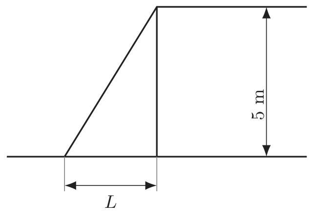

2022년 4회 · 산업안전기사 필기 CBT 기출 재배열 전사 검수본
지면(PDF)과 대조 검수용 · 수식은 KaTeX 렌더 · 총 문항
제1과목 안전관리론
001빈출도 ★☆☆난이도 1·쉬움개념형safe_A_2022_04_001
산업안전보건법상 안전.보건표지의 종류 중 바탕은 파란색, 관련 그림은 흰색을 사용하는 표지는?
① 사용금지
② 세안장치
③ 몸균형상실경고
④ 안전복착용
정답: 4
해설
파란 바탕에 흰 그림은 지시표지다. 안전복 착용이 지시표지다.
안전보건표지의 색과 갈래
| 갈래 | 색 | 보기 |
|---|
| 금지 | 흰 바탕 · 빨간 원과 사선 | 사용금지 · 금연 · 출입금지 |
| 경고 | 노란 바탕 · 검은 삼각형 | 몸균형 상실 경고 · 낙하물 경고 |
| 지시 | 파란 바탕 · 흰 그림 | 안전복 착용 · 안전모 착용 · 보안경 착용 · 이 문항 |
| 안내 | 녹색 바탕 · 흰 그림(또는 흰 바탕 · 녹색 그림) | 세안장치 · 비상구 · 들것 |
오답 분석
① 사용금지는 금지표지로 흰 바탕에 빨간 원과 사선이다.
② 세안장치는 안내표지로 녹색이다.
③ 몸균형상실경고는 경고표지로 노란 바탕이다.
관련 개념 · 암기
안전보건표지의 색채파랑은 「~하라」는 지시다 —
「착용」이라는 말이 붙으면 거의 다 지시표지다.
녹색은 「여기 있다」는 안내다.
◈ 암기 파란 바탕에 흰 그림은 지시표지.
🃏 관련 암기카드
분류: — > — > 안전보건표지의 색채 · 원본 2012.08.26
002빈출도 ★☆☆난이도 1·쉬움개념형safe_A_2022_04_002
다음 중 산업재해의 발생 원인에 있어 간접적 원인에 해당되지 않는 것은?
① 물적 원인
② 기술적 원인
③ 정신적 원인
④ 교육적 원인
정답: 1
해설
물적 원인은 직접원인(불안전한 상태)이다.
산업재해의 원인
| 구분 | 내용 | |
|---|
| 직접원인 | 불안전한 행동(인적 원인) · 불안전한 상태(물적 원인) | 현장에서 바로 보이는 것 |
| 간접원인 | 기술적 원인 · 교육적 원인 · 신체적 원인 · 정신적 원인 · 관리적 원인 · 학교교육적 원인 · 사회적 원인 | 그 뒤에 숨은 것 |
오답 분석
② 기술적 원인은 간접원인이다.
③ 정신적 원인도 그렇다.
④ 교육적 원인도 그렇다.
관련 개념 · 암기
재해의 직접원인과 간접원인직접원인은 「사람의 행동」과 「물건의 상태」 둘뿐이다 —
나머지는 모두 그 뒤에 있는 간접원인이다.
「물적」 · 「인적」이라는 낱말이 곧 직접원인을 가리킨다.
◈ 암기 물적 원인은 직접원인.
🃏 관련 암기카드
분류: 재해조사 및 분석 > 재해 발생 형태 > 재해의 원인 · 원본 2012.03.04
003빈출도 ★☆☆난이도 1·쉬움개념형safe_A_2022_04_003
다음 중 집단에서의 인간관계 메커니즘(Mechanism)과 가장 거리가 먼 것은?
① 동일화, 일체화
② 커뮤니케이션, 공감
③ 모방, 암시
④ 분열, 강박
정답: 4
해설
분열과 강박은 개인의 정신 증상이지 인간관계 메커니즘이 아니다.
집단에서의 인간관계 메커니즘
| 메커니즘 | |
|---|
| 동일화(identification) | 남의 특성을 자기 것으로 받아들인다 |
| 투사(projection) | 자기 감정을 남에게 돌린다 |
| 커뮤니케이션 | 말과 글로 뜻을 주고받는다 |
| 모방(imitation) | 남을 따라 한다 |
| 암시(suggestion) | 비판 없이 남의 의견을 받아들인다 |
| 공감 · 일체화 | |
| 분열 · 강박 | 개인의 정신 증상 |
오답 분석
① 동일화와 일체화는 인간관계 메커니즘이다.
② 커뮤니케이션과 공감도 그렇다.
③ 모방과 암시도 그렇다.
관련 개념 · 암기
인간관계 메커니즘메커니즘은 모두 「남과 이어지는 방식」이다 —
분열과 강박은 혼자 앓는 증상이라 관계의 이야기가 아니다.
◈ 암기 분열·강박은 메커니즘이 아니다.
🃏 관련 암기카드
분류: — > — > 인간관계 메커니즘 · 원본 2012.03.04
004빈출도 ★☆☆난이도 1·쉬움개념형safe_A_2022_04_004
인간의 특성 중 판단과정의 착오요인에 해당되지 않는 것은?
① 합리화
② 정서불안정
③ 작업조건불량
④ 정보부족
정답: 2
해설
정서불안정은 조치과정(조작과정)의 착오요인이다.
착오의 세 과정
| 과정 | 착오요인 | |
|---|
| 인지과정 | 생리·심리적 능력의 한계 · 정보량 저장의 한계 · 감각차단현상 · 정서불안정 | |
| 판단과정 | 능력 부족 · 정보 부족 · 자기 합리화 · 작업조건 불량 · 환경조건 불비 | 이 문항 |
| 조치(조작)과정 | 작업 기술 부족 · 서두름 · 피로 | |
오답 분석
① 합리화는 판단과정의 착오요인이다.
③ 작업조건 불량도 그렇다.
④ 정보부족도 그렇다.
관련 개념 · 암기
착오의 요인판단과정은 「알맞게 가려내는」 단계라
아는 것이 모자라거나(정보·능력 부족), 스스로를 속이거나(합리화), 조건이 나쁜 것이 방해가 된다.
정서는 인지 쪽이다.
◈ 암기 정서불안정은 인지과정.
🃏 관련 암기카드
분류: — > — > 착오의 요인 · 원본 2012.03.04
005빈출도 ★☆☆난이도 1·쉬움개념형safe_A_2022_04_005
다음 중 무재해운동의 이념에 있어 모든 잠재위험요인을 사전에 발견ㆍ파악ㆍ해결함으로써 근원적으로 산업재해를 없앤다는 원칙에 해당하는 것은?
① 참가의 원칙
② 인간존중의 원칙
③ 무의 원칙
④ 선취의 원칙
정답: 3
해설
무(無)의 원칙이다. 「근원적으로 없앤다」는 말이 곧 무의 원칙이다.
무재해운동의 기본이념 3원칙
| 원칙 | | |
|---|
| 무(無)의 원칙 | 잠재위험요인을 뿌리에서부터 없애 산업재해를 0으로 | 이 문항 |
| 참가의 원칙 | 전원이 참가해 각자의 자리에서 문제를 푼다 | |
| 선취(안전제일)의 원칙 | 행동하기 전에 위험을 미리 알아채 없앤다 | |
오답 분석
① 참가의 원칙은 전원이 참가하는 것이다.
② 「인간존중의 원칙」은 무재해운동의 근본이념이지 3원칙의 이름이 아니다.
④ 선취의 원칙은 행동하기 전에 위험을 알아채는 것이다.
관련 개념 · 암기
무재해운동의 기본이념「근원적으로」 · 「뿌리에서부터」라는 말이 무의 원칙을 가리킨다 —
선취는 「미리」, 참가는 「함께」로 낱말이 갈린다.
◈ 암기 근원적으로 없애면 무의 원칙.
🃏 관련 암기카드
분류: 무재해운동 > 무재해·위험예지 > 무재해운동 3원칙 · 원본 2012.03.04
006빈출도 ★☆☆난이도 2·보통개념형safe_A_2022_04_006
다음 중 재해예방을 위한 시정책인 「3E」에 해당하지 않는 것은?
① Education
② Energy
③ Engineering
④ Enforcement
정답: 2
해설
셋은 Engineering · Education · Enforcement다. Energy는 들지 않는다.
하비(Harvey)의 3E
| E | | |
|---|
| Engineering | 기술적 대책 | 안전설계 · 작업행정 개선 · 환경설비 개선 |
| Education | 교육적 대책 | 안전교육 · 훈련 |
| Enforcement | 관리적(규제적) 대책 | 규정 제정 · 지시 · 감독 · 이행 독려 |
| Energy | 3E가 아니다 | |
오답 분석
① Education은 3E의 하나다.
③ Engineering 도 그렇다.
④ Enforcement 도 그렇다.
관련 개념 · 암기
재해예방의 3E「고치고(기술) · 가르치고(교육) · 지키게 한다(관리)」 셋이다 —
여기에 Environment(환경)를 더하면 4E다.
Energy는 어느 쪽에도 없다.
◈ 암기 Engineering · Education · Enforcement.
🃏 관련 암기카드
분류: 보호구 > 호흡·눈·귀 > 3E · 원본 2015.05.31
007빈출도 ★☆☆난이도 1·쉬움개념형safe_A_2022_04_007
다음 중 인사관리의 목적을 가장 올바르게 나타낸 것은?
① 사람과 일과의 관계
② 사람과 기계와의 관계
③ 기계와 적성과의 관계
④ 사람과 시간과의 관계
정답: 1
해설
사람과 일의 관계다. 알맞은 사람을 알맞은 자리에 두는 일이다.
인사관리
| 목적 | 사람과 일의 관계를 알맞게 맺는 것 — 적재적소 |
| 내용 | 채용 · 배치 · 교육훈련 · 평가 · 승진 · 보상 |
| 안전과의 이음 | 적성에 맞지 않는 배치가 사고의 밑바탕이 된다 |
| 사람과 기계의 관계 | 인간공학이 다루는 것 |
오답 분석
② 사람과 기계의 관계는 인간공학이 다룬다.
③ 기계와 적성의 관계라는 말은 성립하지 않는다.
④ 사람과 시간의 관계는 공정관리 쪽이다.
관련 개념 · 암기
인사관리의 목적인사(人事)는 글자 그대로 「사람과 일」이다 —
적재적소, 곧 그 일에 맞는 사람을 앉히는 것이 목적이다.
◈ 암기 인사관리는 사람과 일의 관계.
🃏 관련 암기카드
분류: 산업심리 > 적성·검사 > 인사관리 · 원본 2013.03.10
008빈출도 ★★☆난이도 1·쉬움개념형safe_A_2022_04_008
다음 중 안전점검보고서에 수록될 주요 내용으로 적절하지 않은 것은?
① 작업현장의 현 배치 상태와 문제점
② 안전교육 실시 현황 및 추진 방향
③ 안전관리 스텝의 인적사항
④ 안전방침과 중점개선 계획
정답: 3
해설
안전관리 스태프의 인적사항은 점검보고서에 담을 내용이 아니다.
안전점검보고서의 주요 내용
| 내용 | |
|---|
| 작업현장의 현 배치 상태와 문제점 | |
| 안전교육 실시 현황 및 추진 방향 | |
| 안전방침과 중점개선 계획 | |
| 현장에서 개선할 수 있는 사항과 대책 | |
| 보호구 · 방호장치의 성능과 사용 실태 | |
| 안전관리 스태프의 인적사항 | 보고서에 담을 내용이 아니다 |
오답 분석
① 작업현장의 배치 상태와 문제점은 보고서 내용이다.
② 안전교육 실시 현황과 추진 방향도 그렇다.
④ 안전방침과 중점개선 계획도 그렇다.
관련 개념 · 암기
안전점검보고서보고서는 「무엇이 어떠하며 어떻게 고칠까」를 적는다 —
누가 점검했는지는 적어도 그 사람의 신상은 담을 까닭이 없다.
◈ 암기 스태프 인적사항은 담지 않는다.
🃏 관련 암기카드
분류: 산업심리 > 적성·검사 > 안전점검보고서 · 원본 2012.08.26 · 2015.03.08
009빈출도 ★☆☆난이도 1·쉬움개념형safe_A_2022_04_009
다음 중 피로검사 방법에 있어 심리적인 방법의 검사 항목에 해당하는 것은?
① 호흡순환기능
② 연속반응시간
③ 대뇌피질 활동
④ 혈색소 농도
정답: 2
해설
연속반응시간이 심리적 방법이다.
피로의 검사방법
| 방법 | 검사항목 | |
|---|
| 심리적 방법 | 연속반응시간 · 변별역치 · 정신작업 · 피부저항 · 동작분석 · 집중력 | 이 문항 |
| 생리적 방법 | 호흡순환기능 · 근력 · 근활동 · 대뇌피질 활동(뇌전도) · 인지역치 · 점멸융합주파수 | |
| 생화학적 방법 | 혈색소 농도 · 혈액 · 뇨 단백 · 요전해질 · 부신피질 기능 | |
오답 분석
① 호흡순환기능은 생리적 방법이다.
③ 대뇌피질 활동도 생리적 방법이다.
④ 혈색소 농도는 생화학적 방법이다.
관련 개념 · 암기
피로의 검사방법「몸에 계기를 붙여 재면 생리, 피와 오줌을 뽑으면 생화학, 반응을 시켜 보면 심리」로 갈린다 —
연속반응시간은 사람에게 시켜 보는 것이라 심리적이다.
◈ 암기 연속반응시간은 심리적 방법.
🃏 관련 암기카드
분류: 산업심리 > 적성·검사 > 피로검사 · 원본 2012.08.26
010빈출도 ★☆☆난이도 2·보통개념형safe_A_2022_04_010
다음 중 산업안전보건법령상 안전관리자의 업무에 해당되지 않은 것은? (단, 그 밖에 안전에 관한 사항으로서 고용노동부장관이 정하는 사항은 제외한다.)
① 업무수행 내용의 기록.유지
② 근로자의 건강관리, 보건교육 및 건강증진 지도
③ 안전분야에 한정된 산업재해에 관한 통계의 유지.관리를 위한 지도.조언
④ 법 또는 법에 따른 명령으로 정한 안전에 관한 사항의 이행에 관한 보좌 및 조언ㆍ지도
정답: 2
해설
근로자의 건강관리와 보건교육은 보건관리자의 업무다.
안전관리자의 업무
| 업무 | |
|---|
| 산업안전보건위원회 또는 안전·보건에 관한 노사협의체에서 심의·의결한 업무 | |
| 위험성평가에 관한 보좌 및 지도·조언 | |
| 안전인증대상 기계등과 자율안전확인대상 기계등 구입 시 적격품의 선정에 관한 보좌 및 지도·조언 | |
| 사업장 안전교육계획의 수립 및 실시에 관한 보좌 및 지도·조언 | |
| 안전분야에 한정된 산업재해 통계의 유지·관리·분석을 위한 보좌 및 지도·조언 | |
| 업무수행 내용의 기록·유지 | |
| 근로자의 건강관리·보건교육 및 건강증진 지도 | 보건관리자의 업무 |
오답 분석
① 업무수행 내용의 기록·유지는 안전관리자의 업무다.
③ 안전분야 산업재해 통계의 유지·관리를 위한 지도·조언도 그렇다.
④ 안전에 관한 사항의 이행에 관한 보좌 및 지도·조언도 그렇다.
관련 개념 · 암기
안전관리자와 보건관리자의 업무「건강 · 보건 · 질병」이라는 낱말이 붙으면 보건관리자다 —
안전관리자의 업무에는 「안전」이라는 낱말만 나온다.
◈ 암기 건강관리·보건교육은 보건관리자.
🃏 관련 암기카드
분류: 안전보건관리 체제 > 선임·자격 > 안전관리자의 업무 · 원본 2014.03.02
011빈출도 ★☆☆난이도 1·쉬움개념형safe_A_2022_04_011
다음 중 안전보건관리규정에 포함되어야 할 주요내용과 가장 거리가 먼 것은?
① 안전ㆍ보건교육에 관한 사항
② 작업장 생산관리에 관한 사항
③ 사고조사 및 대책 수입에 관한 사항
④ 안전ㆍ보건 관리조작과 그 직무에 관한 사항
정답: 2
해설
작업장 생산관리는 안전보건관리규정에 담을 내용이 아니다.
안전보건관리규정의 내용
| 내용 | |
|---|
| 안전·보건 관리조직과 그 직무에 관한 사항 | |
| 안전·보건교육에 관한 사항 | |
| 작업장의 안전 및 보건 관리에 관한 사항 | |
| 사고 조사 및 대책 수립에 관한 사항 | |
| 그 밖에 안전 및 보건에 관한 사항 | |
| 작성 시기 | 해당 사유가 발생한 날부터 30일 이내 |
| 작업장 생산관리 | 규정에 담을 내용이 아니다 |
오답 분석
① 안전·보건교육에 관한 사항은 규정의 내용이다.
③ 사고 조사 및 대책 수립에 관한 사항도 그렇다.
④ 안전·보건 관리조직과 그 직무에 관한 사항도 그렇다.
관련 개념 · 암기
안전보건관리규정다섯 항목이 「조직 · 교육 · 관리 · 사고조사 · 그 밖」이다 —
모두 안전보건의 이야기이고
생산은 다른 규정의 몫이다.
◈ 암기 생산관리는 담지 않는다.
🃏 관련 암기카드
분류: 안전보건관리 체제 > 안전보건관리규정 > 안전보건관리규정 · 원본 2013.08.18
012빈출도 ★☆☆난이도 2·보통개념형safe_A_2022_04_012
다음 중 알더퍼(Alderfer)의 ERG 이론에서 제시한 인간의 3가지 욕구에 해당하는 것은?
① Growth 욕구
② Rationalization 욕구
③ Economy 욕구
④ Environment 욕구
정답: 1
해설
Growth(성장) 욕구다. 셋은 Existence · Relatedness · Growth다.
알더퍼의 ERG 이론
| 욕구 | 매슬로와 견주면 |
|---|
| E | Existence(존재) | 생리적 욕구 + 안전 욕구 |
| R | Relatedness(관계) | 사회적 욕구 + 존경 욕구의 일부 |
| G | Growth(성장) | 존경 욕구의 일부 + 자아실현 욕구 |
| 특징 | 여러 욕구가 동시에 작용하고, 좌절하면 낮은 욕구로 되돌아간다 | 좌절-퇴행 |
오답 분석
② Rationalization은 방어기제의 이름이다.
③ Economy 욕구는 ERG에 없다.
④ Environment 욕구도 없다.
관련 개념 · 암기
알더퍼의 ERG 이론「E · R · G」 세 글자가 곧 답이다 —
Existence · Relatedness · Growth.
매슬로의 5단계를 셋으로 줄인 것이다.
◈ 암기 Existence · Relatedness · Growth.
🃏 관련 암기카드
분류: 안전보건교육 > 교육계획·평가 > ERG 이론 · 원본 2012.03.04
013빈출도 ★☆☆난이도 1·쉬움개념형safe_A_2022_04_013
다음 중 안전교육계획 수립시 포함하여야 할 사항과 가장 거리가 먼 것은?
① 교재의 준비
② 교육기간 및 시간
③ 교육의 종류 및 교육대상
④ 교육담당자 및 강사
정답: 1
해설
교재의 준비는 계획을 세운 뒤 실행하는 단계의 일이다.
안전교육계획에 담을 사항
| 사항 | |
|---|
| 교육의 목표와 목적 | |
| 교육의 종류 및 교육대상 | |
| 교육의 과목 및 내용 | |
| 교육기간 및 시간 | |
| 교육장소 | |
| 교육방법 | |
| 교육담당자 및 강사 | |
| 교재의 준비 | 실행 단계의 일 |
오답 분석
② 교육기간 및 시간은 계획에 담을 사항이다.
③ 교육의 종류 및 교육대상도 그렇다.
④ 교육담당자 및 강사도 그렇다.
관련 개념 · 암기
안전교육계획의 수립계획은 「무엇을 · 누구에게 · 언제 · 어디서 · 어떻게 · 누가」를 정하는 일이다 —
교재는 그것이 정해진 뒤에 만드는 물건이다.
◈ 암기 교재 준비는 실행 단계.
🃏 관련 암기카드
분류: 안전보건교육 > 교육계획·평가 > 안전교육계획 · 원본 2012.03.04
014빈출도 ★☆☆난이도 1·쉬움개념형safe_A_2022_04_014
교육심리학의 기본이론 중 학습지도의 원리에 속하지 않는 것은?
① 직관의 원리
② 개별화의 원리
③ 사회화의 원리
④ 계속성의 원리
정답: 4
해설
계속성의 원리는 학습경험 조직의 원리다. 학습지도의 원리가 아니다.
학습지도의 원리
| 원리 | |
|---|
| 자기활동(자발성)의 원리 | 스스로 하게 한다 |
| 개별화의 원리 | 저마다의 요구와 능력에 맞춘다 |
| 사회화의 원리 | 공동학습으로 사회성을 기른다 |
| 통합의 원리 | 전인교육 |
| 직관의 원리 | 구체물을 직접 보여 준다 |
| 목적의 원리 | 학습목표를 뚜렷이 |
| 계속성의 원리 | 학습경험 조직의 원리 — 계속성·계열성·통합성 |
오답 분석
① 직관의 원리는 학습지도의 원리다.
② 개별화의 원리도 그렇다.
③ 사회화의 원리도 그렇다.
관련 개념 · 암기
학습지도의 원리「계속성 · 계열성」은 교육과정을 짜는 쪽의 말이고
학습지도의 원리는 가르치는 자리에서 지킬 것이다.
두 목록이 「통합성」에서만 겹친다.
◈ 암기 계속성은 조직의 원리.
🃏 관련 암기카드
분류: 안전보건교육 > 교육 이론 > 학습지도의 원리 · 원본 2012.03.04
015빈출도 ★☆☆난이도 1·쉬움개념형safe_A_2022_04_015
안전교육방법 중 동기유발요인에 영향을 미치는 요소와 가장 거리가 먼 것은?
정답: 4
해설
회피는 물러나는 것이라 동기를 일으키는 요소가 아니다.
구체적인 동기유발요인
| 요인 | |
|---|
| 안정 · 기회 · 참여 · 인정 · competition(경쟁) | |
| 적응도 · 경제 · 성과 · 권력 · 통제 | |
| 감독 · 승진 · 책임 | |
| 회피 | 동기유발요인이 아니다 |
오답 분석
① 책임은 동기유발요인이다.
② 참여도 그렇다.
③ 성과도 그렇다.
관련 개념 · 암기
동기유발요인동기유발요인은 「사람을 앞으로 나아가게 하는 것」이다 —
회피는 뒤로 물러나는 것이라 방향이 반대다.
◈ 암기 회피는 동기유발요인이 아니다.
🃏 관련 암기카드
분류: 안전보건교육 > 학습이론 > 동기유발요인 · 원본 2012.03.04
016빈출도 ★☆☆난이도 1·쉬움개념형safe_A_2022_04_016
다음 중 의무안전인증대상 안전모의 성능기준 항목이 아닌 것은?
① 내열성
② 턱끈풀림
③ 내관통성
④ 충격흡수성
정답: 1
해설
내열성은 성능기준 항목이 아니다.
안전모의 성능시험 항목
| 항목 | |
|---|
| 내관통성 | AE·ABE 종은 관통거리 9.5 [mm] 이하, AB 종은 11.1 [mm] 이하 |
| 충격흡수성 | 전달충격력 4,450 [N] 미만 |
| 내전압성 | AE·ABE 종 — 교류 20 [kV]에서 1분간, 누설전류 10 [mA] 이하 |
| 내수성 | AE·ABE 종 — 질량증가율 1% 미만 |
| 난연성 | 불꽃을 내며 5초 이상 타지 않을 것 |
| 턱끈풀림 | 150 [N] 이상 250 [N] 이하에서 풀릴 것 |
| 내열성 | 성능기준 항목이 아니다 |
오답 분석
② 턱끈풀림은 성능기준 항목이다.
③ 내관통성도 그렇다.
④ 충격흡수성도 그렇다.
관련 개념 · 암기
안전모의 성능기준여섯 항목이 「뚫림 · 충격 · 전압 · 물 · 불 · 턱끈」이다 —
불에 관한 것은 「난연성」이지 「내열성」이 아니다.
한 낱말만 바꿔 놓았다.
◈ 암기 내열성이 아니라 난연성.
🃏 관련 암기카드
분류: 안전점검·인증 > 안전인증·검사 > 안전모의 성능기준 · 원본 2014.05.25
017빈출도 ★☆☆난이도 1·쉬움개념형safe_A_2022_04_017
다음 중 통계에 의한 재해원인 분석방법으로 볼 수 없는 것은?
① 파레토도
② 위험분포도
③ 특성요인도
④ 크로스분석
정답: 2
해설
「위험분포도」라는 분석방법은 없다.
통계적 원인분석의 방법
| 방법 | 무엇 | |
|---|
| 파레토도 | 사고의 유형·기인물 등을 큰 순서대로 막대로 그린다 | 중점 대상을 찾는다 |
| 특성요인도 | 결과(특성)에 원인을 생선뼈 모양으로 잇는다 | 어골도 |
| 클로즈(크로스)분석 | 두 요인의 관계를 표로 나타낸다 | 2개 이상의 상호관계 |
| 관리도 | 월별 재해건수의 추이를 관리선으로 본다 | UCL · CL · LCL |
| 위험분포도 | 없는 이름 | |
오답 분석
① 파레토도는 통계적 원인분석 방법이다.
③ 특성요인도도 그렇다.
④ 크로스분석도 그렇다.
관련 개념 · 암기
통계적 원인분석네 방법이 「막대(파레토) · 생선뼈(특성요인) · 표(크로스) · 꺾은선(관리도)」로 그림 모양이 다 다르다.
「분포도」는 그 넷에 없다.
◈ 암기 파레토 · 특성요인 · 크로스 · 관리도.
🃏 관련 암기카드
분류: 재해조사 및 분석 > 재해조사·통계 > 통계적 원인분석 · 원본 2011.03.20
018빈출도 ★☆☆난이도 3·어려움계산형safe_A_2022_04_018
1000명의 근로자가 근무하는 금속제품 제조업체에서 연간 100건의 재해가 발생하였다. 이 가운데 근로자들이 질병, 기타 사유로 인하여 총근로시간 중 3%가 결근하였다면 이 업체의 도수율은 약 얼마인가? (단, 근로자는 주당 48시간, 연간 50주를 근무하였다)
① 31.67
② 32.96
③ 41.67
④ 42.96
정답: 4
해설
연근로시간은 $1 {,} 000 \times 48 \times 50 \times 0.97 = 2 {,} 328 {,} 000$ 시간이다. $\dfrac{100}{2 {,} 328 {,} 000} \times 10^{6} \fallingdotseq 42.96$이다.
도수율의 셈
| 단계 | 셈 | |
|---|
| ① 총 근로시간 | 1,000 × 48 × 50 = 2,400,000 시간 | |
| ② 결근 3%를 뺀다 | 2,400,000 × 0.97 = 2,328,000 시간 | 여기서 갈린다 |
| ③ 도수율 | $\dfrac{100}{2 {,} 328 {,} 000} \times 10^{6} = 42.96$ | |
| 결근을 빼지 않으면 | 41.67 | ③으로 끌린다 |
오답 분석
① 31.67은 계산과 맞지 않는다.
② 32.96 도 그렇다.
③ 41.67은 결근 3%를 빼지 않은 값이다.
관련 개념 · 암기
도수율「실제로 일한 시간」이 분모다 —
결근한 3%는 일하지 않았으므로 빼야 한다.
빼지 않은 값이 보기에 함께 놓여 있다.
◈ 암기 결근시간은 빼고 셈한다.
🃏 관련 암기카드
분류: 재해조사 및 분석 > 재해율 계산 > 도수율 · 원본 2011.03.20
019빈출도 ★★☆난이도 1·쉬움개념형safe_A_2022_04_019
재해원인 분석방법의 통계적 원인분석 중 사고의 유형, 기인물 등 분류항목을 큰 순서대로 도표화한 것은?
① 파레토도
② 특성요인도
③ 크로스도
④ 관리도
정답: 1
해설
파레토도다. 큰 것부터 차례로 늘어놓아 중점 대상을 찾는다.
통계적 원인분석의 방법
| 방법 | 무엇 | 쓰임 |
|---|
| 파레토도 | 분류항목을 큰 순서대로 막대로 | 중점 관리대상을 고른다 · 이 문항 |
| 특성요인도 | 결과와 원인을 생선뼈 모양으로 | 원인을 낱낱이 펼친다 |
| 클로즈(크로스)분석 | 두 요인의 관계를 표로 | |
| 관리도 | 월별 추이를 관리선과 견준다 | 목표관리 |
오답 분석
② 특성요인도는 원인을 생선뼈 모양으로 잇는 그림이다.
③ 크로스도는 두 요인의 관계를 보는 표다.
④ 관리도는 월별 추이를 보는 꺾은선이다.
관련 개념 · 암기
파레토도「큰 순서대로」라는 말이 곧 파레토도다 —
앞의 몇 항목이 전체의 대부분을 차지한다(2 : 8 법칙)는 데서 나온 방법이다.
◈ 암기 큰 순서대로 도표화하면 파레토도.
🃏 관련 암기카드
분류: 재해조사 및 분석 > 재해조사·통계 > 통계적 원인분석 · 원본 2017.08.26 · 2020.09.26
020빈출도 ★☆☆난이도 3·어려움계산형safe_A_2022_04_020
근로자수 300명, 총 근로 시간수 48시간×50주이고, 연재해건수는 200건 일 때 이 사업장의 강도율은? (단, 연 근로 손실일수는 800일로 한다.)
① 1.11
② 0.90
③ 0.16
④ 0.84
정답: 1
해설
연근로시간은 $300 \times 48 \times 50 = 720 {,} 000$ 시간이다. $\dfrac{800}{720 {,} 000} \times 1 {,} 000 \fallingdotseq 1.11$이다.
강도율의 셈
| 강도율 | $\dfrac{\text{근로손실일수}}{\text{연근로시간수}} \times 1 {,} 000$ | |
| 연근로시간 | 300 × 48 × 50 = 720,000 시간 | |
| 강도율 | 800 ÷ 720,000 × 1,000 = 1.11 | |
| 재해건수 200건 | 강도율의 셈에는 쓰이지 않는다 | 도수율에 쓰인다 |
오답 분석
② 0.90은 계산과 맞지 않는다.
③ 0.16 도 그렇다.
④ 0.84 도 그렇다.
관련 개념 · 암기
강도율재해건수 200건은 도수율에 쓰는 값이라 이 문항에서는 쓰이지 않는다 —
문제에 준 값을 다 쓰려 하면 틀린다.
강도율에 필요한 것은 「근로손실일수」와 「연근로시간」 둘뿐이다.
◈ 암기 $\text{강도율} = \dfrac{\text{근로손실일수}}{\text{연근로시간}} \times 1 {,} 000$.
🃏 관련 암기카드
분류: 재해조사 및 분석 > 재해율 계산 > 강도율 · 원본 2017.03.05
제2과목 인간공학 및 시스템안전공학
021빈출도 ★☆☆난이도 2·보통개념형safe_A_2022_04_021
다음 중 최소 컷셋(Minimal cut sets)에 관한 설명으로 옳은 것은?
① 컷셋 중에 타 컷셋을 포함하고 있는 것을 배제하고 남은 컷셋들을 의미한다.
② 어느 고장이나 에러를 일으키지 않으면 재해가 일어나지 않는 시스템의 신뢰성이다.
③ 기본사상이 일어났을 때 정상사상(Top event)을 일으키는 기본사상의 집합이다.
④ 기본사상이 일어나지 않을 때 정상사상(Top event)이 일어나지 않는 기본사상의 집합이다.
정답: 1
해설
다른 컷셋을 품고 있는 것을 걷어 내고 남은 컷셋이 미니멀 컷셋이다.
컷셋 · 미니멀 컷셋 · 패스셋
| 무엇 | |
|---|
| 컷셋 | 동시에 일어나면 정상사상이 나는 기본사상의 집합 | ③이 이 설명 |
| 미니멀 컷셋 | 컷셋 가운데 다른 컷셋을 품은 것을 걷어 내고 남은 것 | ① — 이 문항 · 더 줄일 수 없는 최소 집합 |
| 패스셋 | 모두 일어나지 않으면 정상사상이 나지 않는 집합 | ②④가 이 설명 |
오답 분석
② 고장이나 에러가 없으면 재해가 나지 않는 신뢰성은 패스셋 쪽의 설명이다.
③ 정상사상을 일으키는 기본사상의 집합은 (미니멀이 아닌) 컷셋의 설명이다.
④ 기본사상이 일어나지 않을 때 정상사상이 나지 않는 집합은 패스셋의 설명이다.
관련 개념 · 암기
미니멀 컷셋「미니멀」이라는 말이 곧 「더 줄일 수 없다」는 뜻이다 —
컷셋 {A, B} 가 있으면 {A, B, C} 는 군더더기라 걷어 낸다.
③은 컷셋의 정의일 뿐 「미니멀」이 빠져 있다.
◈ 암기 남을 품은 컷셋을 걷어 낸 것.
🃏 관련 암기카드
분류: 결함수분석 > FTA 기호·구조 > 미니멀 컷셋 · 원본 2011.03.20
022빈출도 ★☆☆난이도 1·쉬움개념형safe_A_2022_04_022
다음 중 인간-기계 체제(Man-machine system)의 연구 목적으로 가장 적절한 것은?
① 정보 저장의 극대화
② 운전시 피로의 극소화
③ 시스템의 신뢰성 극대화
④ 안전을 극대화시키고 생산능률을 향상
정답: 4
해설
안전을 극대화하고 생산능률을 높이는 것이 궁극적인 목적이다.
인간공학의 목적
| 궁극적 목적 | 안전성 향상과 사고 예방 | ④ |
| 작업능률과 생산성 향상 | |
| 쾌적한 작업환경 조성 | |
| 수단 | 피로 경감 · 신뢰성 향상 · 정보 처리 개선 | ①②③은 그 가운데 하나씩 |
오답 분석
① 정보 저장의 극대화는 목적의 한 조각일 뿐이다.
② 피로의 극소화도 그렇다.
③ 신뢰성의 극대화도 그렇다.
관련 개념 · 암기
인간-기계 시스템의 목적보기 셋은 저마다 한 가지씩만 말하는데 하나만 「안전과 능률」을 함께 말한다 —
가장 넓게 아우르는 것이 답이다.
◈ 암기 인간공학의 목적은 안전과 생산능률.
🃏 관련 암기카드
분류: 인간공학 개요 > 정의·목적 > 인간-기계 시스템 · 원본 2012.08.26
023빈출도 ★☆☆난이도 2·보통개념형safe_A_2022_04_023
James Reason의 원인적 휴면에러 종류 중 다음 설명의 휴먼에러 종류는?
자동차가 우측 운행하는 한국의 도로에 익숙해진 운전자가 좌측 운행을 해야 하는 일본에서 우측 운행을 하다가 교통사고를 냈다.
① 고의 사고(Violation)
② 숙련 기반 에러(Skill based error)
③ 규칙 기반 착오(Rule based mistake)
④ 지식 기반 착오(Knowledge based mistake)
정답: 3
해설
규칙 기반 착오다. 몸에 밴 규칙(우측 통행)을 그 규칙이 통하지 않는 곳에 그대로 적용했다.
라스무센·리즌의 휴먼에러 분류
| 종류 | 무엇 | 보기 |
|---|
| 숙련 기반 에러 | 익숙한 동작을 하다 실수하거나 잊는다 | 실수(slip) · 건망증(lapse) |
| 규칙 기반 착오 | 아는 규칙을 잘못 적용한다 | 우측통행 나라의 규칙을 좌측통행 나라에서 · 이 문항 |
| 지식 기반 착오 | 아는 것이 모자라 판단을 그르친다 | 처음 겪는 상황 |
| 위반(violation) | 알면서 일부러 어긴다 | |
오답 분석
① 고의 사고(위반)는 알면서 일부러 어기는 것이다.
② 숙련 기반 에러는 익숙한 동작 중의 실수나 건망증이다.
④ 지식 기반 착오는 아는 것이 모자라 판단을 그르치는 것이다.
관련 개념 · 암기
휴먼에러의 분류「규칙은 알고 있는데 그 규칙이 여기서는 통하지 않는다」는 것이 규칙 기반 착오다 —
아예 몰랐다면 지식 기반, 알고도 어겼다면 위반이다.
◈ 암기 익숙한 규칙을 엉뚱한 데 쓰면 규칙 기반 착오.
🃏 관련 암기카드
⚠ 점검 요망: 오염 문항과 이웃함
분류: 결함수분석 > FTA 기호·구조 > 휴먼에러의 분류 · 원본 2022.03.05
024빈출도 ★☆☆난이도 2·보통개념형safe_A_2022_04_024
다음 중 기계 또는 설비에 이상이나 오동작이 발생하여도 안전사고를 발생시키지 않도록 2중 또는 3중으로 통제를 가하도록 한 체계에 속하지 않는 것은?
① 다경로하중구조
② 하중경감구조
③ 교대구조
④ 격리구조
정답: 4
해설
넷은 다경로하중구조 · 하중경감구조 · 교대구조 · 중복구조다. 「격리구조」는 들지 않는다.
페일세이프(fail safe)의 구조적 방법
| 구조 | |
|---|
| 다경로하중구조 | 하중이 여러 길로 나뉘어 하나가 끊겨도 버틴다 |
| 하중경감구조 | 한 부재가 망가지면 다른 부재가 하중을 나눠 받는다 |
| 교대구조 | 예비 부재가 대신 받는다 |
| 중복구조 | 같은 것을 겹쳐 둔다 |
| 격리구조 | 페일세이프의 구조가 아니다 |
오답 분석
① 다경로하중구조는 페일세이프 구조의 하나다.
② 하중경감구조도 그렇다.
③ 교대구조도 그렇다.
관련 개념 · 암기
페일세이프의 구조넷이 모두 「하중을 어떻게 나눠 받나」를 말한다 —
여러 길로 · 나눠서 · 대신 · 겹쳐서.
「격리」는 떼어 놓는 것이라 하중과 관계가 없다.
◈ 암기 다경로 · 하중경감 · 교대 · 중복.
🃏 관련 암기카드
분류: — > — > 페일세이프 구조 · 원본 2012.05.20
025빈출도 ★☆☆난이도 1·쉬움개념형safe_A_2022_04_025
다음 중 위험관리에 있어 위험조정기술로 가장 적절하지 않은 것은?
① 책임(responsibility)
② 위험 감축(reduction)
③ 보류(retention)
④ 위험 회피(avoidance)
정답: 1
해설
넷은 회피 · 감축 · 보류 · 전가다. 「책임」은 들지 않는다.
위험조정기술 네 가지
| 기술 | 무엇 | 보기 |
|---|
| 회피(avoidance) | 위험한 일을 아예 하지 않는다 | |
| 감축(reduction) | 일어날 확률이나 크기를 줄인다 | 방호장치 · 교육 |
| 보류(retention) | 작은 위험은 스스로 떠안는다 | 자가보험 |
| 전가(transfer) | 남에게 넘긴다 | 보험 가입 · 도급 |
| 책임 | 위험조정기술이 아니다 | |
오답 분석
② 위험 감축은 위험조정기술이다.
③ 보류도 그렇다.
④ 위험 회피도 그렇다.
관련 개념 · 암기
위험조정기술「피하고 · 줄이고 · 떠안고 · 넘긴다」 넷이다 —
네 낱말이 모두 「위험을 어떻게 다룰까」 인데
「책임」은 그 결과를 누가 지느냐의 문제다.
◈ 암기 회피 · 감축 · 보류 · 전가.
🃏 관련 암기카드
분류: — > — > 위험조정기술 · 원본 2012.05.20
026빈출도 ★☆☆난이도 2·보통개념형safe_A_2022_04_026
체계 설계 과정의 주요 단계가 다음과 같을 때 인간ㆍ하드웨어ㆍ소프트웨어의 기능 할당, 인간성능 요건 명세, 직무분석, 작업설계 등의 활동을 하는 단계는?
목표 및 성능 명세 결정 · 체계의 정의 · 기본 설계
계면 설계 · 촉진물 설계 · 시험 및 평가
① 체계의 정의
② 기본 설계
③ 계면 설계
④ 촉진물 설계
정답: 2
해설
기본설계(제3단계)다. 기능을 나누고 직무를 짜는 단계다.
인간-기계 시스템 설계의 6단계
| 단계 | | |
|---|
| 1 | 목표와 성능명세의 결정 | |
| 2 | 시스템의 정의 | 어떤 기능이 필요한가 |
| 3 | 기본설계 | 기능 할당 · 인간성능 요건 명세 · 직무분석 · 작업설계 · 이 문항 |
| 4 | 계면(인터페이스) 설계 | 표시장치와 조종장치 |
| 5 | 촉진물(보조물) 설계 | 지시서 · 설명서 · 훈련도구 |
| 6 | 시험과 평가 | |
오답 분석
① 체계의 정의는 어떤 기능이 필요한지 정하는 제2단계다.
③ 계면 설계는 표시장치와 조종장치를 설계하는 제4단계다.
④ 촉진물 설계는 지시서와 훈련도구를 만드는 제5단계다.
관련 개념 · 암기
인간-기계 시스템 설계의 단계기본설계의 네 활동이 「기능 할당 · 인간성능 요건 · 직무분석 · 작업설계」다 —
「할당 · 요건 · 직무 · 작업」이라는 낱말이 나오면 3단계다.
◈ 암기 기능 할당과 직무분석은 기본설계.
🃏 관련 암기카드
분류: 정보입력표시 > 표시장치·조종장치 > 인간-기계 시스템 설계 · 원본 2012.03.04
027빈출도 ★☆☆난이도 2·보통개념형safe_A_2022_04_027
다음 설명에 해당하는 인간의 오류모형은?
상황이나 목표의 해석은 정확하나 의도와는 다른 행동을 한 경우
① 착오(Mistake)
② 실수(Slip)
③ 건망증(Lapse)
④ 위반(Violation)
정답: 2
해설
실수(slip)다. 하려던 일은 맞는데 손이 다르게 움직인 것이다.
인간의 오류모형
| 모형 | 무엇 | 보기 |
|---|
| 착오(mistake) | 상황이나 목표의 해석 자체가 틀렸다 | 가려던 곳을 잘못 알았다 |
| 실수(slip) | 해석은 맞는데 행동이 어긋났다 | 누르려던 것과 다른 버튼을 눌렀다 · 이 문항 |
| 건망증(lapse) | 기억이 끊겨 해야 할 일을 잊었다 | |
| 위반(violation) | 알면서 일부러 어겼다 | |
오답 분석
① 착오는 상황이나 목표의 해석 자체가 틀린 것이다.
③ 건망증은 해야 할 일을 잊은 것이다.
④ 위반은 알면서 일부러 어긴 것이다.
관련 개념 · 암기
인간의 오류모형「머리는 맞고 손이 틀렸으면 실수, 머리부터 틀렸으면 착오」다 —
「해석은 정확하나」라는 단서가 그대로 실수를 가리킨다.
◈ 암기 해석은 맞고 행동이 어긋나면 실수.
🃏 관련 암기카드
분류: 결함수분석 > FTA 기호·구조 > 휴먼에러의 분류 · 원본 2011.08.21
028빈출도 ★☆☆난이도 2·보통개념형safe_A_2022_04_028
시스템안전 MIL-STD-882B 분류기준의 위험성 평가 매트릭스에서 발생빈도에 속하지 않는 것은?
① 거의 발생하지 않는(remote)
② 전혀 발생하지 않는(impossible)
③ 보통 발생하는(reasonably probable)
④ 극히 발생하지 않을 것 같은(extremely improbable)
정답: 2
해설
「전혀 발생하지 않는(impossible)」이라는 등급은 없다.
MIL-STD-882B의 발생빈도 다섯 등급
| 등급 | |
|---|
| 자주 발생하는(frequent) | |
| 보통 발생하는(reasonably probable) | |
| 가끔 발생하는(occasional) | |
| 거의 발생하지 않는(remote) | |
| 극히 발생하지 않을 것 같은(extremely improbable) | |
| 전혀 발생하지 않는(impossible) | 없는 등급 |
오답 분석
① 「거의 발생하지 않는(remote)」은 발생빈도 등급이다.
③ 「보통 발생하는」도 그렇다.
④ 「극히 발생하지 않을 것 같은」도 그렇다.
관련 개념 · 암기
위험성 평가 매트릭스「전혀 없다」고 잘라 말할 수 있는 위험은 없다 —
그래서 가장 낮은 등급도 「극히 ~하지 않을 것 같은」이라는 조심스러운 말로 둔다.
위험강도는 파국적 · 위기적 · 한계적 · 무시가능 넷이다.
◈ 암기 「전혀 발생하지 않는」 등급은 없다.
🃏 관련 암기카드
⚠ 점검 요망: 오염 문항과 이웃함
분류: 시스템 위험분석 > 시스템 안전 일반 > MIL-STD-882B · 원본 2020.06.06
029빈출도 ★☆☆난이도 3·어려움계산형safe_A_2022_04_029
FMEA에서 고장 평점을 결정하는 5가지 평가요소에 해당하지 않는 것은?
① 생산능력의 범위
② 고장발생의 빈도
③ 고장방지의 가능성
④ 영향을 미치는 시스템의 범위
정답: 1
해설
생산능력의 범위는 다섯 요소에 들지 않는다.
FMEA 고장평점법의 다섯 평가요소
| 평가요소 | |
|---|
| 기능적 고장 영향의 중요도 | |
| 영향을 미치는 시스템의 범위 | |
| 고장발생의 빈도 | |
| 고장방지의 가능성 | |
| 신규설계의 정도 | |
| 평점 | $C = ( C_{1} C_{2} C_{3} C_{4} C_{5} )^{1 / 5}$ |
| 생산능력의 범위 | 평가요소가 아니다 |
오답 분석
② 고장발생의 빈도는 다섯 요소의 하나다.
③ 고장방지의 가능성도 그렇다.
④ 영향을 미치는 시스템의 범위도 그렇다.
관련 개념 · 암기
FMEA의 고장평점법다섯 요소가 모두 「고장」에 관한 말이다 —
중요도 · 범위 · 빈도 · 방지 가능성 · 신규설계.
「생산능력」은 고장과 무관하다.
◈ 암기 생산능력은 평가요소가 아니다.
🃏 관련 암기카드
⚠ 점검 요망: 오염 문항과 이웃함
분류: 시스템 위험분석 > PHA·FHA·FMEA > FMEA 고장평점법 · 원본 2018.04.28
030빈출도 ★☆☆난이도 1·쉬움개념형safe_A_2022_04_030
다음 중 신뢰성과 보전성 개선을 목적으로 한 효과적인 보전기록자료에 해당하는 것은?
① 자재관리표
② MTBF분석표
③ 주유지시서
④ 검사주기표
정답: 2
해설
MTBF 분석표다. 고장 사이의 시간을 모아 신뢰성과 보전성을 따진다.
보전기록자료
| 자료 | |
|---|
| MTBF 분석표 | 고장 사이의 평균 시간을 모아 분석 · 이 문항 |
| 설비이력카드 | 설비마다의 고장과 수리 이력 |
| 고장원인 대책표 | 무엇이 왜 고장 났고 어떻게 고쳤나 |
| 자재관리표 · 주유지시서 · 검사주기표 | 작업을 지시하는 문서 — 분석자료가 아니다 |
오답 분석
① 자재관리표는 자재를 관리하는 문서다.
③ 주유지시서는 기름칠을 지시하는 문서다.
④ 검사주기표는 검사 시기를 적어 둔 문서다.
관련 개념 · 암기
보전기록자료「분석」에 쓰이는 자료는 MTBF 분석표 · 설비이력카드 · 고장원인 대책표 셋이다 —
나머지는 「무엇을 언제 하라」는 지시 문서라 개선의 근거가 되지 못한다.
◈ 암기 MTBF 분석표 · 설비이력카드 · 고장원인 대책표.
🃏 관련 암기카드
분류: 신뢰성 > 신뢰도 계산 > 보전기록자료 · 원본 2011.08.21
031빈출도 ★☆☆난이도 2·보통공식형safe_A_2022_04_031
다음 중 기업에서 보전효과 측정을 위해 일반적으로 사용되는 평가요소를 잘못 나타낸 것은?
① 설비고장도수율 = 설비가동시간/설비고장건수
② 제품단위당 보전비 = 총보전비/제품수량
③ 운전 1시간당 보전비 = 총보전비/설비운전시간
④ 계획공사율 = 계획공사공수(工數)/전공수(全工數)
정답: 1
해설
설비고장도수율은 $\dfrac{\text{설비고장건수}}{\text{설비가동시간}}$이다. 분자와 분모가 뒤바뀌어 있다.
보전효과의 평가요소
| 항목 | 식 | |
|---|
| 설비고장도수율 | $\dfrac{\text{설비고장건수}}{\text{설비가동시간}}$ | 뒤집어 놓은 것이 함정 |
| 설비고장강도율 | $\dfrac{\text{설비고장 정지시간}}{\text{설비가동시간}}$ | |
| 제품단위당 보전비 | $\dfrac{\text{총보전비}}{\text{제품수량}}$ | |
| 운전 1시간당 보전비 | $\dfrac{\text{총보전비}}{\text{설비운전시간}}$ | |
| 계획공사율 | $\dfrac{\text{계획공사공수}}{\text{전공수}}$ | |
오답 분석
② 제품단위당 보전비의 식은 맞다.
③ 운전 1시간당 보전비의 식도 맞다.
④ 계획공사율의 식도 맞다.
관련 개념 · 암기
보전효과의 평가「~율 · ~도수율」은 「나쁜 일 ÷ 전체」라는 꼴이다 —
고장이 분자에 와야 값이 클수록 나쁘다는 뜻이 된다.
뒤집으면 값이 클수록 좋다는 말이 되어 앞뒤가 맞지 않는다.
◈ 암기 고장도수율은 고장건수 ÷ 가동시간.
🃏 관련 암기카드
분류: 신뢰성 > 보전 > 보전효과의 평가 · 원본 2011.06.12
032빈출도 ★☆☆난이도 1·쉬움개념형safe_A_2022_04_032
다음 중 인체측정학에 있어 구조적 인체 치수는 신체가 어떠한 자세에 있을 때 측정한 치수를 말하는가?
① 양손을 벌리고 서있는 자세
② 고개를 들고 앉아있는 자세
③ 움직이지 않고 고정된 자세
④ 누워서 편안히 쉬고 있는 자세
정답: 3
해설
움직이지 않고 고정된 자세에서 잰다. 정적 측정이다.
구조적 인체치수와 기능적 인체치수
| 구조적(정적) 인체치수 | 기능적(동적) 인체치수 |
|---|
| 자세 | 움직이지 않고 고정된 자세 | 움직이는 자세 |
| 무엇 | 신체 각 부위의 길이·둘레 | 작업 중 팔이 닿는 범위 등 |
| 도구 | 마르틴식 인체계측기 | 사진·영상 계측 |
| 쓰임 | 의자 높이 · 문 크기 | 작업영역 · 조종장치 배치 |
오답 분석
① 양손을 벌리고 서 있는 자세는 특정 항목의 측정자세일 뿐이다.
② 고개를 들고 앉아 있는 자세도 그렇다.
④ 누워서 쉬는 자세는 측정자세가 아니다.
관련 개념 · 암기
인체측정의 두 갈래「구조적」은 뼈대의 치수라 가만히 있을 때, 「기능적」은 움직임의 치수라 움직일 때 잰다.
「고정된」이라는 낱말이 곧 구조적이다.
◈ 암기 구조적 인체치수는 고정된 자세.
🃏 관련 암기카드
분류: 인간계측·작업공간 > 인체계측 > 인체측정 · 원본 2011.08.21
033빈출도 ★☆☆난이도 3·어려움계산형safe_A_2022_04_033
A작업의 평균에너지소비량이 다음과 같을 때, 60분간의 총 작업시간 내에 포함되어야 하는 휴식시간(분)은?
- 휴식중 에너지소비량 : 1.5 kcal/min
- A작업 시 평균 에너지소비량 : 6 kcal/min
- 기초대사를 포함한 작업에 대한 평균 에너지소비량 상한 : 5 kcal/min
① 10.3
② 11.3
③ 12.3
④ 13.3
정답: 4
해설
$R = \dfrac{60 ( E - 5 )}{E - 1.5} = \dfrac{60 \times ( 6 - 5 )}{6 - 1.5} = \dfrac{60}{4.5} \fallingdotseq 13.3$ 분이다.
휴식시간의 셈 (머렐의 식)
| 식 | |
|---|
| 휴식시간 | $R = \dfrac{T ( E - S )}{E - 1.5}$ [분] | |
| T | 총 작업시간 | 60분 |
| E | 작업의 평균 에너지소비량 | 6 [kcal/min] |
| S | 에너지소비량의 상한 | 5 [kcal/min] |
| 1.5 | 휴식 중 에너지소비량 | |
오답 분석
① 10.3 분은 계산과 맞지 않는다.
② 11.3 분도 그렇다.
③ 12.3 분도 그렇다.
관련 개념 · 암기
휴식시간(머렐의 식)분자는 「넘친 만큼(E − S)」, 분모는 「쉬면 줄어드는 만큼(E − 1.5)」이다 —
넘친 에너지를 쉬는 동안 되돌려 놓는 데 걸리는 시간을 셈하는 것이다.
◈ 암기 $R = \dfrac{T ( E - S )}{E - 1.5}$.
🃏 관련 암기카드
⚠ 점검 요망: 지문과 선택지 사이에 페이지가 바뀜 | 교차 오염 의심
분류: 인간계측·작업공간 > 생리·에너지 > 휴식시간 · 원본 2022.04.24
034빈출도 ★☆☆난이도 3·어려움계산형safe_A_2022_04_034
A 작업장에서 1시간 동안에 480Btu의 일을 하는 근로자의 대사량은 900Btu이고, 증발 열손실이 2250Btu, 복사 및 대류로부터 열이득이 각각 1900Btu 및 80Btu라 할 때 열축적은 얼마인가?
정답: 2
해설
$S = M - E \pm R \pm C - W = 900 - 2 {,} 250 + 1 {,} 900 + 80 - 480 = 150$ [Btu]다.
열균형 방정식
| 기호 | 무엇 | 값 |
|---|
| S | 열축적 | 구하는 값 |
| M | 대사량 | 900 |
| E | 증발에 의한 열손실 | −2,250 |
| R | 복사에 의한 열이득 | +1,900 |
| C | 대류에 의한 열이득 | +80 |
| W | 한 일 | −480 |
| 식 | $S = M - E \pm R \pm C - W$ | |
오답 분석
① 100 [Btu]는 계산과 맞지 않는다.
③ 200 [Btu] 도 그렇다.
④ 250 [Btu] 도 그렇다.
관련 개념 · 암기
열균형 방정식「들어오는 것은 더하고 나가는 것은 뺀다」가 전부다 —
대사와 복사·대류의 이득은 +, 증발과 한 일은 −다.
「한 일(W)도 빼야 한다」는 점을 놓치기 쉽다.
◈ 암기 $S = M - E \pm R \pm C - W$.
🃏 관련 암기카드
⚠ 점검 요망: 오염 문항과 이웃함
분류: 작업환경관리 > 열교환·실효온도 > 열균형 방정식 · 원본 2013.08.18
035빈출도 ★☆☆난이도 1·쉬움개념형safe_A_2022_04_035
양립성의 종류에 포함되지 않는 것은?
① 공간 양립성
② 형태 양립성
③ 개념 양립성
④ 운동 양립성
정답: 2
해설
넷은 공간 · 운동 · 개념 · 양식 양립성이다. 「형태 양립성」은 없다.
양립성의 종류
| 양립성 | 무엇 | 보기 |
|---|
| 공간 양립성 | 자리가 맞는가 | 가스레인지 왼쪽 화구의 손잡이가 왼쪽에 |
| 운동 양립성 | 움직이는 방향이 맞는가 | 시계방향으로 돌리면 값이 는다 |
| 개념 양립성 | 이미 아는 뜻과 맞는가 | 빨강은 위험, 파랑은 안전 |
| 양식 양립성 | 주고받는 방식이 맞는가 | 말로 물으면 말로 답한다 |
| 형태 양립성 | 없는 이름 | |
오답 분석
① 공간 양립성은 양립성의 하나다.
③ 개념 양립성도 그렇다.
④ 운동 양립성도 그렇다.
관련 개념 · 암기
양립성의 종류네 가지를 「자리 · 방향 · 뜻 · 방식」으로 새겨 둔다 —
「모양(형태)」은 그 넷에 없다.
◈ 암기 공간 · 운동 · 개념 · 양식.
🃏 관련 암기카드
분류: 정보입력표시 > 표시장치·조종장치 > 양립성 · 원본 2019.08.04
036빈출도 ★☆☆난이도 1·쉬움개념형safe_A_2022_04_036
시각 표시장치보다 청각 표시장치의 사용이 바람직한 경우는?
① 전언이 복잡한 경우
② 전언이 재참조되는 경우
③ 전언이 즉각적인 행동을 요구하는 경우
④ 직무상 수신자가 한 곳에 머무는 경우
정답: 3
해설
즉각적인 행동을 요구할 때는 청각 표시장치가 낫다. 소리는 눈을 돌리지 않아도 들린다.
시각 표시장치와 청각 표시장치
| 청각 표시장치가 낫다 | 시각 표시장치가 낫다 |
|---|
| 전언 | 짧고 간단하다 | 길고 복잡하다 |
| 다시 볼 일 | 없다(한 번 듣고 끝) | 나중에 다시 참조한다 |
| 긴급성 | 즉각적인 행동을 요구한다 | 그렇지 않다 |
| 수신자 | 여기저기 옮겨 다닌다 | 한 곳에 머문다 |
| 환경 | 눈이 이미 바쁘다 · 어둡다 | 시끄럽다 |
오답 분석
① 전언이 복잡하면 시각 표시장치가 낫다.
② 다시 참조할 전언도 시각 표시장치가 낫다.
④ 수신자가 한 곳에 머무는 경우도 시각 표시장치가 낫다.
관련 개념 · 암기
표시장치의 선택소리는 「지나가 버리지만 어디서나 들린다」 —
짧고 급하고 사람이 움직일 때는 청각,
길고 복잡하고 다시 볼 것은 시각이다.
◈ 암기 즉각적인 행동을 요구하면 청각.
🃏 관련 암기카드
분류: 정보입력표시 > 시각 > 표시장치의 선택 · 원본 2019.08.04
037빈출도 ★☆☆난이도 2·보통개념형safe_A_2022_04_037
다음 중 정량적 자료를 정성적 판독의 근거로 사용하는 경우로 볼 수 없는 것은?
① 미리 정해 놓은 몇 개의 한계범위에 기초하여 변수의 상태나 조건을 판정할 때
② 목표로 하는 어떤 범위의 값을 유지할 때
③ 변화 경향이나 변화율을 조사하고자 할 때
④ 세부 형태를 확대하여 동일한 시각을 유지해 주어야 할 때
정답: 4
해설
세부 형태를 확대해 같은 시각을 유지 하는 것은 정량적 판독을 위한 것이다.
정량적 자료를 정성적으로 읽는 경우
| 경우 | |
|---|
| 미리 정한 몇 개의 한계범위로 상태나 조건을 판정할 때 | 정상 · 주의 · 위험 |
| 목표로 하는 어떤 범위의 값을 유지할 때 | 자동차 속도계 |
| 변화 경향이나 변화율을 조사할 때 | 오르는가 내리는가 |
| 세부 형태를 확대해 같은 시각을 유지할 때 | 정량적 판독을 위한 것 |
오답 분석
① 한계범위로 상태를 판정하는 것은 정성적 판독이다.
② 목표 범위를 유지하는 것도 그렇다.
③ 변화 경향이나 변화율을 조사하는 것도 그렇다.
관련 개념 · 암기
정성적 표시장치정성적 판독은 「정확한 값이 아니라 상태를 본다」 —
정상인가 · 오르는가 · 범위 안인가.
「세부를 확대해 정확히 읽는다」는 정량적 쪽이다.
◈ 암기 세부 확대는 정량적 판독.
🃏 관련 암기카드
분류: 정보입력표시 > 시각 > 정성적 표시장치 · 원본 2012.03.04
038빈출도 ★☆☆난이도 2·보통개념형safe_A_2022_04_038
A사의 안전관리자는 자사 화학 설비의 안전성 평가를 실시하고 있다. 그 중 제2단계인 정성적 평가를 진행하기 위하여 평가 항목을 설계단계 대상과 운전관계 대상으로 분류하였을 때 설계관계 항목이 아닌 것은?
① 건조물
② 공장 내 배치
③ 입지조건
④ 원재료, 중간제품
정답: 4
해설
원재료와 중간제품은 운전관계 항목이다.
안전성 평가 제2단계 — 정성적 평가
| 구분 | 항목 | |
|---|
| 설계관계 | 입지조건 · 공장 내 배치 · 건조물 · 소방설비 | 짓는 데 관한 것 |
| 운전관계 | 원재료·중간체·제품 · 공정 · 수송·저장 · 공정기기 | 돌리는 데 관한 것 |
오답 분석
① 건조물은 설계관계 항목이다.
② 공장 내 배치도 그렇다.
③ 입지조건도 그렇다.
관련 개념 · 암기
정성적 평가의 항목「어디에 · 어떻게 배치해 · 무엇으로 지었나」는 설계, 「무엇을 · 어떤 공정으로 다루나」는 운전이다.
물질의 이름이 나오면 운전관계다.
◈ 암기 원재료·중간제품은 운전관계.
🃏 관련 암기카드
⚠ 점검 요망: 오염 문항과 이웃함
분류: 정보입력표시 > 표시장치·조종장치 > 안전성 평가 · 원본 2022.03.05
039빈출도 ★☆☆난이도 2·보통개념형safe_A_2022_04_039
정보수용을 위한 작업자의 시각 영역에 대한 설명으로 옳은 것은?
① 판별시야 – 안구운동만으로 정보를 주시하고 순간적으로 특정정보를 수용할 수 있는 범위
② 유효시야 – 시력, 색판별 등의 시각 기능이 뛰어나며 정밀도가 높은 정보를 수용할 수 있는 범위
③ 보조시야 – 머리부분의 운동이 안구운동을 돕는 형태로 발생하며 무리 없이 주시가 가능한 범위
④ 유도시야 – 제시된 정보의 존재를 판별할 수 있는 정도의 식별능력 밖에 없지만 인간의 공간좌표 감각에 영향을 미치는 범위
정답: 4
해설
유도시야의 설명만 옳다. ①②③은 판별·유효·보조시야의 뜻을 서로 바꿔 놓았다.
작업자의 시각 영역
| 시야 | 무엇 | |
|---|
| 판별시야 | 시력·색판별 등 시각 기능이 뛰어나 정밀도 높은 정보를 받는 범위 | ②가 이 설명 |
| 유효시야 | 안구운동만으로 주시해 순간적으로 특정 정보를 받는 범위 | ①이 이 설명 |
| 유도시야 | 정보의 존재만 알아챌 뿐이나 공간좌표 감각에 영향을 주는 범위 | ④ — 이 문항 |
| 보조시야 | 거의 식별되지 않고 머리를 돌려야 주시할 수 있는 범위 | ③은 유효시야 밖의 설명과 뒤섞였다 |
오답 분석
① 판별시야는 시력·색판별이 뛰어나 정밀도 높은 정보를 받는 범위다.
② 유효시야는 안구운동만으로 순간적으로 특정 정보를 받는 범위다.
③ 보조시야는 머리를 돌려야 주시할 수 있는 범위다.
관련 개념 · 암기
시각 영역의 구분「판별 → 유효 → 유도 → 보조」 순으로 넓어지고 흐려진다 —
가운데가 또렷하고 가장자리로 갈수록 「있다」는 것만 안다.
①과 ②의 설명이 서로 바뀌어 있다.
◈ 암기 공간좌표 감각에 영향을 주면 유도시야.
🃏 관련 암기카드
⚠ 점검 요망: 선택지에 다른 문항의 기호가 섞임
분류: 정보입력표시 > 시각 > 시각 영역 · 원본 2021.08.14
040빈출도 ★★☆난이도 1·쉬움개념형safe_A_2022_04_040
음량수준을 평가하는 척도와 관계없는 것은?
정답: 2
해설
HSI(열압박지수)는 더위를 나타내는 지수다. 음량과 관계없다.
음량의 척도
| 척도 | 무엇 | |
|---|
| dB(데시벨) | 음압수준 | |
| phon(폰) | 1,000 [Hz] 순음의 [dB] 값에 맞춘 음량수준 | 등감곡선 |
| sone(손) | 1,000 [Hz], 40 [dB]을 1 sone으로 한 감각적 음량 | 10 [phon] 오를 때마다 2배 |
| PNdB · PNC · NRN | 소음의 성가심 정도 | |
| HSI | 열압박지수(Heat Stress Index) | 더위의 척도 |
오답 분석
① dB은 음압수준의 단위다.
③ phon은 음량수준의 단위다.
④ sone은 감각적 음량의 단위다.
관련 개념 · 암기
음량의 척도셋은 소리, 하나는 더위다 —
HSI의 H가 Heat라는 것만 알면 곧 갈린다.
phon과 sone의 관계(10 [phon] 마다 2배)도 함께 잡아 둔다.
◈ 암기 HSI는 열압박지수.
🃏 관련 암기카드
⚠ 점검 요망: 오염 문항과 이웃함
분류: 정보입력표시 > 청각·경보 > 음량의 척도 · 원본 2019.04.27 · 2021.05.15
제3과목 기계위험방지기술
041빈출도 ★☆☆난이도 2·보통개념형safe_A_2022_04_041
다음 중 플레이너 작업시의 안전대책으로 거리가 먼 것은?
① 베드 위에 다른 물건을 올려놓지 않는다.
② 바이트는 되도록 짧게 나오도록 설치한다.
③ 프레임 내의 피트(pit)에는 뚜껑을 설치한다.
④ 칩브레이커를 사용하여 칩이 길게 되도록 한다.
정답: 4
해설
칩 브레이커는 칩을 짧게 끊는 장치다. 「길게 되도록」이 뒤집혀 있다.
플레이너 작업의 안전대책
| 항목 | |
|---|
| 베드 위에 다른 물건을 올려놓지 않는다 | 왕복하는 테이블에 부딪친다 |
| 바이트는 되도록 짧게 물린다 | 떨림을 줄인다 |
| 프레임 안의 피트에 뚜껑을 덮는다 | 빠지지 않게 |
| 칩 브레이커로 칩을 짧게 끊는다 | 「길게」가 아니다 |
| 테이블의 행정거리 끝에 방책을 친다 | |
오답 분석
① 베드 위에 다른 물건을 올려놓지 않는 것은 맞다.
② 바이트를 짧게 설치하는 것도 맞다.
③ 피트에 뚜껑을 설치하는 것도 맞다.
관련 개념 · 암기
플레이너 작업의 안전「브레이커(breaker)」는 「끊는 것」이다 —
끊는 장치로 길게 만든다는 말은 앞뒤가 맞지 않는다.
긴 칩은 뜨겁고 날카로워 몸에 감긴다.
◈ 암기 칩 브레이커는 칩을 짧게.
🃏 관련 암기카드
분류: 공작기계 > 선반·밀링·드릴 > 플레이너 · 원본 2013.08.18
042빈출도 ★☆☆난이도 2·보통개념형safe_A_2022_04_042
다음 중 밀링작업에 대한 안전조치 사항으로 옳지 않은 것은?
① 급속이송은 한 방향으로만 한다.
② 커터는 될 수 있는 한 컬럼에 가깝게 설치한다.
③ 백래시(back lash) 제거장치는 급속이송시 작동한다.
④ 이송장치의 핸들은 사용 후 반드시 빼 두어야 한다.
정답: 3
해설
백래시 제거장치는 하향절삭을 할 때 작동 시킨다. 급속이송 때에는 꺼 두어야 한다.
밀링작업의 안전조치
| 항목 | |
|---|
| 급속이송은 한 방향으로만 | |
| 커터는 되도록 컬럼에 가깝게 | 떨림을 줄인다 |
| 백래시 제거장치는 하향절삭 때 작동 | 급속이송 때에는 꺼 둔다 |
| 이송장치의 핸들은 사용 뒤 빼 둔다 | 돌아가는 핸들에 부딪친다 |
| 칩은 브러시로 제거 | |
오답 분석
① 급속이송을 한 방향으로만 하는 것은 맞다.
② 커터를 컬럼에 가깝게 설치하는 것도 맞다.
④ 이송장치 핸들을 사용 뒤 빼 두는 것도 맞다.
관련 개념 · 암기
밀링의 백래시 제거장치백래시 제거장치는 나사의 틈을 없애 테이블이 딸려 가지 않게 하는 것이다 —
하향절삭에서 필요하고, 급속이송 때 물려 있으면 오히려 무리가 간다.
◈ 암기 백래시 제거장치는 하향절삭 때.
🃏 관련 암기카드
분류: 공작기계 > 선반·밀링·드릴 > 밀링작업 · 원본 2013.08.18
043빈출도 ★☆☆난이도 1·쉬움개념형safe_A_2022_04_043
다음 중 선반에서 작용하는 칩브레이커(chip breaker) 종류에 속하지 않는 것은?
① 연삭형
② 클램프형
③ 쐐기형
④ 자동조정식
정답: 3
해설
셋은 연삭형 · 클램프형 · 자동조정식이다. 「쐐기형」은 없다.
칩 브레이커의 종류
| 종류 | |
|---|
| 연삭형 | 바이트 자체를 갈아 홈을 낸 것 |
| 클램프형 | 바이트 위에 조각을 물려 붙인 것 |
| 자동조정식 | 홈의 폭과 각을 조절할 수 있는 것 |
| 쐐기형 | 없는 이름 |
오답 분석
① 연삭형은 칩 브레이커의 한 종류다.
② 클램프형도 그렇다.
④ 자동조정식도 그렇다.
관련 개념 · 암기
칩 브레이커의 종류세 이름이 「어떻게 홈을 만드나」다 —
갈아서(연삭) · 물려서(클램프) · 조절해서(자동조정).
「쐐기」는 그 셋에 없다.
◈ 암기 연삭형 · 클램프형 · 자동조정식.
🃏 관련 암기카드
분류: 공작기계 > 선반·밀링·드릴 > 칩 브레이커 · 원본 2013.06.02
044빈출도 ★☆☆난이도 1·쉬움개념형safe_A_2022_04_044
산업안전보건법령상 프레스기를 사용하여 작업을 할 때 작업시작 전 점검사항으로 틀린 것은?
① 클러치 및 브레이크의 기능
② 압력방출장치의 기능
③ 크랭크축·플라이휠·슬라이드·연결봉 및 연결나사의 풀림 유무
④ 프레스의 금형 및 고정 볼트의 상태
정답: 2
해설
압력방출장치는 보일러의 방호장치다.
프레스 작업시작 전 점검사항
| 점검사항 | |
|---|
| 클러치 및 브레이크의 기능 | |
| 크랭크축·플라이휠·슬라이드·연결봉 및 연결 나사의 풀림 유무 | |
| 1행정 1정지기구·급정지장치 및 비상정지장치의 기능 | |
| 슬라이드 또는 칼날에 의한 위험방지 기구의 기능 | |
| 프레스의 금형 및 고정볼트 상태 | |
| 방호장치의 기능 | |
| 전단기의 칼날 및 테이블의 상태 | |
| 압력방출장치의 기능 | 보일러의 방호장치 |
오답 분석
① 클러치 및 브레이크의 기능은 점검사항이다.
③ 크랭크축 등의 풀림 유무도 그렇다.
④ 프레스의 금형 및 고정볼트 상태도 그렇다.
관련 개념 · 암기
프레스의 작업시작 전 점검프레스는 「돌고 · 눌리고 · 멈추는」 기계라 점검도 클러치 · 슬라이드 · 정지장치 · 금형에 모인다.
「압력」이라는 낱말이 나오면 보일러 쪽이다.
◈ 암기 압력방출장치는 보일러.
🃏 관련 암기카드
분류: 기계 일반 > 동력전달·통로 > 작업시작 전 점검 · 원본 2022.04.24
045빈출도 ★☆☆난이도 2·보통개념형safe_A_2022_04_045
접지공사의 종류에 따른 접지선(연동선)의 굵기 기준으로 옳은 것은?
① 제1종 : 공칭단면적 6mm2 이상
② 제2종 : 공칭단면적 12mm2 이상
③ 제3종 : 공칭단면적 5mm2 이상
④ 특별 제3종 : 공칭단면적 3.5mm2 이상
정답: 1
해설
제1종은 공칭단면적 6 [mm²] 이상이다. 나머지 셋은 값이 어긋나 있다.
옛 접지공사의 접지선 굵기
| 종별 | 연동선 굵기 | |
|---|
| 제1종 | 6 [mm²] 이상 | 이 문항 |
| 제2종 | 16 [mm²] 이상 | 고압·특고압과 저압을 결합하는 변압기 — 「12」가 아니다 |
| 제3종 | 2.5 [mm²] 이상 | 「5」가 아니다 |
| 특별 제3종 | 2.5 [mm²] 이상 | 「3.5」가 아니다 |
오답 분석
② 제2종은 12 [mm²]가 아니라 16 [mm²] 이상이다.
③ 제3종은 5 [mm²]가 아니라 2.5 [mm²] 이상이다.
④ 특별 제3종도 3.5 [mm²]가 아니라 2.5 [mm²] 이상이다.
관련 개념 · 암기
접지선의 굵기「6 · 16 · 2.5 · 2.5」 네 값이다 —
고압을 다루는 제1·2종이 굵고, 저압을 다루는 제3종 계열은 가늘다.
◈ 암기 제1종은 6 [mm²] 이상.
⚠ 주의사항 KEC 시행(2021.1.1)으로 접지공사의 종별 구분과 종별 접지선 굵기 기준이 모두 폐지 하였다. 지금은 보호도체의 단면적을 상도체 굵기나 계산식으로 정한다. 이 문항은 옛 기준에 따른 것이다.
🃏 관련 암기카드
분류: 기계 일반 > 위험점·방호 > 접지선의 굵기 · 원본 2020.09.26
046빈출도 ★☆☆난이도 1·쉬움개념형safe_A_2022_04_046
가공기계에 쓰이는 주된 풀 푸르프(Fool Proof)에서 가드(Guard)의 형식으로 틀린 것은?
① 인터록 가드(Interlock Guard)
② 안내 가드(Guide Guard)
③ 조정 가드(Adjustable Guard)
④ 고정 가드(Fixed Guard)
정답: 2
해설
넷은 인터록 가드 · 조정 가드 · 고정 가드 · 자동 가드다. 「안내 가드」는 없다.
풀 프루프의 가드 형식
| 가드 | |
|---|
| 인터록 가드(interlock guard) | 가드가 열리면 기계가 서고, 기계가 돌면 가드가 열리지 않는다 |
| 조정 가드(adjustable guard) | 공작물이나 공구에 맞춰 조절한다 |
| 고정 가드(fixed guard) | 붙박이로 고정해 손이 닿지 않게 한다 |
| 자동 가드(automatic guard) | 기계가 움직이면 저절로 닫힌다 |
| 안내 가드 | 없는 이름 |
오답 분석
① 인터록 가드는 가드 형식의 하나다.
③ 조정 가드도 그렇다.
④ 고정 가드도 그렇다.
관련 개념 · 암기
풀 프루프의 가드네 이름이 「어떻게 닫히나」를 말한다 —
맞물려서(인터록) · 조절해서(조정) · 붙박이로(고정) · 저절로(자동).
「안내」는 닫는 방식이 아니다.
◈ 암기 인터록 · 조정 · 고정 · 자동.
🃏 관련 암기카드
분류: 기계 일반 > 위험점·방호 > 풀 프루프의 가드 · 원본 2020.06.06
047빈출도 ★☆☆난이도 2·보통개념형safe_A_2022_04_047
기계설비에 대한 본질적인 안전화 방안의 하나인 풀 프루프(Fool Proof)에 관한 설명으로 거리가 먼 것은?
① 계기나 표시를 보기 쉽게 하거나 이른바 인체공학적 설계도 넓은 의미의 풀 프루프에 해당된다.
② 설비 및 기계장치 일부가 고장이 난 경우 기능의 저하는 가져오나 전체기능은 정지하지 않는다.
③ 인간이 에러를 일으키기 어려운 구조나 기능을 가진다.
④ 조작순서가 잘못되어도 올바르게 작동한다.
정답: 2
해설
일부가 고장 나도 전체가 서지 않는 것은 페일세이프다.
풀 프루프와 페일세이프
| 풀 프루프(fool proof) | 페일세이프(fail safe) |
|---|
| 무엇을 막나 | 사람의 잘못(human error) | 기계의 고장(failure) |
| 원리 | 잘못 다뤄도 사고가 나지 않게 | 고장 나도 안전한 쪽으로 |
| 보기 | 조작순서가 틀려도 바르게 작동 · 인터록 · 인체공학적 표시 | 일부가 고장 나도 전체는 서지 않는다 · 다경로하중구조 |
오답 분석
① 계기나 표시를 보기 쉽게 하는 인체공학적 설계도 넓은 뜻의 풀 프루프다.
③ 사람이 에러를 일으키기 어려운 구조로 만드는 것도 그렇다.
④ 조작순서가 잘못되어도 바르게 작동하는 것도 그렇다.
관련 개념 · 암기
풀 프루프와 페일세이프「fool(바보)」은 사람, 「fail(고장)」은 기계다 —
막으려는 대상이 다르다.
「고장이 나도」라는 말이 붙으면 페일세이프다.
◈ 암기 고장을 막는 쪽이 페일세이프.
🃏 관련 암기카드
분류: 기계 일반 > 안전조건·안전율 > 풀 프루프와 페일세이프 · 원본 2017.08.26
048빈출도 ★★☆난이도 1·쉬움개념형safe_A_2022_04_048
다음 중 포터블 벨트 컨베이어(potable belt conveyor) 운전시 준수사항으로 적절하지 않은 것은?
① 공회전하여 기계의 운전상태를 파악한다.
② 정해진 조작 스위치를 사용하여야 한다.
③ 운전시작 전 주변 근로자에게 경고하여야 한다.
④ 하물 적치 후 몇 번씩 시동, 정지를 반복 테스트한다.
정답: 4
해설
짐을 올려놓은 채 시동과 정지를 되풀이하면 짐이 쏟아지거나 기계가 넘어진다.
포터블 벨트 컨베이어의 운전
| 항목 | |
|---|
| 공회전으로 운전상태를 먼저 살핀다 | |
| 정해진 조작 스위치만 쓴다 | |
| 운전 시작 전에 주변 근로자에게 알린다 | |
| 짐을 올린 뒤 시동·정지를 되풀이하지 않는다 | 짐이 쏟아지고 기계가 흔들린다 |
| 이동할 때는 전원을 끄고 벨트를 정지시킨다 | |
오답 분석
① 공회전으로 운전상태를 파악하는 것은 맞다.
② 정해진 조작 스위치를 쓰는 것도 맞다.
③ 운전 시작 전 주변에 경고하는 것도 맞다.
관련 개념 · 암기
포터블 벨트 컨베이어포터블(portable)은 바퀴로 옮겨 다니는 것이라
고정된 컨베이어보다 훨씬 잘 흔들린다.
짐을 얹은 채 급하게 세웠다 돌리는 것이 가장 위험하다.
◈ 암기 짐을 얹고 시동·정지를 되풀이하지 않는다.
🃏 관련 암기카드
분류: 기계 일반 > 동력전달·통로 > 포터블 벨트 컨베이어 · 원본 2012.05.20 · 2015.08.16
049빈출도 ★☆☆난이도 2·보통개념형safe_A_2022_04_049
다음 중 정 작업시의 작업안전수칙으로 틀린 것은?
① 정 작업시에는 보안경을 착용하여야 한다.
② 정 작업으로 담금질된 재료를 가공해서는 안 된다.
③ 정 작업을 시작할 때와 끝날 무렵에는 세게 친다.
④ 철강재를 정으로 절단시에는 철편이 날아 튀는 것에 주의한다.
정답: 3
해설
시작할 때와 끝날 무렵에는 약하게 친다.
정 작업의 타격 세기
| 때 | 세기 | 까닭 |
|---|
| 시작할 때 | 약하게 | 날을 자리 잡게 한다 |
| 가운데 | 세게 | |
| 끝날 무렵 | 약하게 | 끊어진 조각이 날아간다 |
| 그 밖 | 보안경 착용 · 담금질한 재료는 치지 않는다 | |
오답 분석
① 보안경을 착용해야 하는 것은 맞다.
② 담금질된 재료를 가공하지 않는 것도 맞다.
④ 철편이 날아 튀는 것에 주의해야 하는 것도 맞다.
관련 개념 · 암기
정(chisel) 작업의 안전「약 → 강 → 약」이 정 작업의 리듬이다 —
마지막 한 번의 세기가 튀는 조각의 속도를 정한다.
◈ 암기 시작과 끝은 약하게.
🃏 관련 암기카드
분류: 기계 일반 > 수공구·작업수칙 > 정 작업 · 원본 2014.05.25
050빈출도 ★★☆난이도 1·쉬움개념형safe_A_2022_04_050
원동기, 풀리, 기어 등 근로자에게 위험을 미칠 우려가 있는 부위에 설치하는 위험방지 장치가 아닌 것은?
정답: 4
해설
램(ram)은 셰이퍼나 프레스의 왕복 부재다. 방호장치가 아니다.
원동기·회전축 등의 방호장치
| 장치 | |
|---|
| 덮개 | 위를 덮는다 |
| 울 | 둘레를 막는다 |
| 슬리브 | 돌출한 축이나 키를 감싼다 |
| 건널다리 | 벨트나 축을 건너간다 |
| 램 | 셰이퍼·프레스의 왕복 부재 — 방호장치가 아니다 |
오답 분석
① 덮개는 방호장치다.
② 슬리브도 그렇다.
③ 건널다리도 그렇다.
관련 개념 · 암기
회전부의 방호장치네 장치가 「덮고 · 막고 · 감싸고 · 건너간다」다 —
램은 기계를 이루는 부재이지 사람을 지키는 것이 아니다.
◈ 암기 램은 방호장치가 아니다.
🃏 관련 암기카드
⚠ 그림 보강 필요
분류: 기계 일반 > 동력전달·통로 > 회전부의 방호 · 원본 2013.03.10 · 2017.03.05
051빈출도 ★☆☆난이도 1·쉬움개념형safe_A_2022_04_051
산업안전보건법령상 목재가공용 기계에 사용되는 방호장치의 연결이 옳지 않은 것은?
① 둥근톱기계 : 톱날접촉예방장치
② 띠톱기계 : 날접촉예방장치
③ 모떼기기계 : 날접촉예방장치
④ 동력식 수동대패기계 : 반발예방장치
정답: 4
해설
동력식 수동대패기계는 칼날접촉방지장치다. 반발예방장치는 둥근톱기계의 것이다.
목재가공용 기계의 방호장치
| 기계 | 방호장치 | |
|---|
| 둥근톱기계 | 톱날접촉예방장치(덮개) + 반발예방장치(분할날) | |
| 띠톱기계 | 날접촉예방장치 | 덮개 또는 울 |
| 모떼기기계 | 날접촉예방장치 | |
| 동력식 수동대패기계 | 칼날접촉방지장치 | 「반발예방장치」가 아니다 |
| radial 톱기계 | 반발예방장치 · 톱날접촉예방장치 | |
오답 분석
① 둥근톱기계에 톱날접촉예방장치를 두는 것은 맞다.
② 띠톱기계에 날접촉예방장치를 두는 것도 맞다.
③ 모떼기기계에 날접촉예방장치를 두는 것도 맞다.
관련 개념 · 암기
목재가공용 기계의 방호장치「반발」은 켜는 톱에서만 일어난다 —
켠 자리가 오므라들어 재료를 뒤로 튕기기 때문이다.
대패는 깎아 내는 것이라 반발이 없고 날에 닿는 것만 막으면 된다.
◈ 암기 대패는 칼날접촉방지장치.
🃏 관련 암기카드
⚠ 점검 요망: 지문과 선택지 사이에 페이지가 바뀜 | 교차 오염 의심
분류: 기계 일반 > 위험점·방호 > 목재가공용 기계의 방호장치 · 원본 2022.03.05
052빈출도 ★☆☆난이도 2·보통개념형safe_A_2022_04_052
산업안전보건법령에 따라 사업주는 근로자가 안전하게 통행할 수 있도록 통로에 얼마 이상의 채광 또는 조명시설을 하여야 하는가?
① 50럭스
② 75럭스
③ 90럭스
④ 100럭스
정답: 2
해설
75 [lux] 이상이다.
조도기준
| 장소·작업 | 조도 | |
|---|
| 통로 | 75 [lux] 이상 | 이 문항 |
| 그 밖의 작업 | 75 [lux] 이상 | |
| 보통작업 | 150 [lux] 이상 | |
| 정밀작업 | 300 [lux] 이상 | |
| 초정밀작업 | 750 [lux] 이상 | |
오답 분석
① 50 [lux]는 기준에 못 미친다.
③ 90 [lux]는 기준값이 아니다.
④ 100 [lux] 도 그렇다.
관련 개념 · 암기
작업면과 통로의 조도「750 · 300 · 150 · 75」 네 값 가운데
통로는 가장 낮은 75다 —
다니기만 하면 되기 때문이다.
◈ 암기 통로는 75 [lux] 이상.
🃏 관련 암기카드
⚠ 점검 요망: 오염 문항과 이웃함
분류: 기계 일반 > 동력전달·통로 > 통로의 조명 · 원본 2022.03.05
053빈출도 ★☆☆난이도 2·보통개념형safe_A_2022_04_053
아세틸렌은 매우 타기 쉬운 기체인데 공기 중에서 약 몇 ℃ 부근에서 자연 발화를 하는가?
① 406 ~ 408℃
② 456 ~ 458℃
③ 506 ~ 508℃
④ 556 ~ 558℃
정답: 1
해설
약 406 ~ 408 [℃]다.
아세틸렌의 성질
| 항목 | 값 | |
|---|
| 자연발화점 | 약 406 ~ 408 [℃] | 이 문항 |
| 폭발범위 | 2.5 ~ 81 [vol%] | 가장 넓다 |
| 사용압력 | 게이지 압력 127 [kPa] 이하 | |
| 분해폭발 | 산소 없이도 스스로 갈라지며 터진다 | |
| 금기 금속 | 구리 · 은 · 수은 | |
오답 분석
② 456 ~ 458 [℃]는 값이 맞지 않는다.
③ 506 ~ 508 [℃] 도 그렇다.
④ 556 ~ 558 [℃] 도 그렇다.
관련 개념 · 암기
아세틸렌의 발화점400 [℃] 남짓이라는 크기만 잡으면 된다 —
보기가 50 [℃] 씩 벌어져 있어 자릿수가 아니라 첫 숫자로 갈린다.
◈ 암기 아세틸렌은 약 406 ~ 408 [℃].
🃏 관련 암기카드
분류: 산업용 기계 > 아세틸렌·용접 > 아세틸렌 · 원본 2011.06.12
054빈출도 ★☆☆난이도 2·보통개념형safe_A_2022_04_054
일반적으로 산업용 로봇을 운전하는 경우, 해당 로봇에 접촉함으로써 근로자에게 위험이 발생할 우려가 있을 때 설치하는 방책의 높이 기준은?
① 1.2m 이상
② 1.5m 이상
③ 1.8m 이상
④ 2m 이상
정답: 3
해설
높이 1.8 [m] 이상의 방책을 친다.
산업용 로봇의 안전조치
| 항목 | |
|---|
| 방책의 높이 | 1.8 [m] 이상 — 안전매트와 함께 |
| 교시 등의 작업 전 점검 | 외부 전선의 피복 손상 · 매니퓰레이터 작동 이상 · 제동장치와 비상정지장치의 기능 |
| 교시작업 | 매니퓰레이터의 속도를 느리게 |
| 수리·검사 | 운전을 정지하고 기동스위치에 잠금장치 |
| 표지 | 「운전 중 조작금지」 |
오답 분석
① 1.2 [m]는 사람이 넘기 쉽다.
② 1.5 [m] 도 기준에 못 미친다.
④ 2 [m]는 기준보다 높다.
관련 개념 · 암기
산업용 로봇의 방호1.8 [m]는 어른이 넘어 들어가기 어려운 높이다 —
로봇의 팔은 예고 없이 빠르게 움직이므로 사람이 반경 안에 들어가지 못하게 하는 것이 최선이다.
◈ 암기 로봇 방책은 1.8 [m] 이상.
🃏 관련 암기카드
분류: 산업용 기계 > 로봇·기타 > 산업용 로봇 · 원본 2011.06.12
055빈출도 ★☆☆난이도 1·쉬움개념형safe_A_2022_04_055
압력용기에 설치해야 하는 안전장치는?
① 압력방출장치
② 압력제한스위치
③ 고저수위조절장치
④ 화염검출기
정답: 1
해설
압력방출장치다. 나머지 셋은 보일러의 방호장치다.
압력용기와 보일러의 안전장치
| 압력용기 | 보일러 |
|---|
| 장치 | 압력방출장치(안전밸브 · 파열판) | 압력방출장치 · 압력제한스위치 · 고저수위조절장치 · 화염검출기 |
| 설치 대상 | 안지름 150 [mm]를 넘는 것 | |
| 작동 | 최고사용압력 이하 | 2개 이상이면 나머지는 1.05배 이하 |
| 검사 | 매년 1회 이상 | |
오답 분석
② 압력제한스위치는 보일러의 방호장치다.
③ 고저수위조절장치도 그렇다.
④ 화염검출기도 그렇다.
관련 개념 · 암기
압력용기의 안전장치압력용기는 물을 끓이지 않으므로 수위도 화염도 없다 —
남는 것은 압력을 빼는 장치 하나뿐이다.
보일러의 네 장치와 견주어 두면 갈린다.
◈ 암기 압력용기는 압력방출장치.
🃏 관련 암기카드
분류: 산업용 기계 > 보일러·압력용기 > 압력용기의 안전장치 · 원본 2011.06.12
056빈출도 ★☆☆난이도 1·쉬움개념형safe_A_2022_04_056
다음 중 기계설비의 수명곡선에서 나타나는 고장형태가 아닌 것은?
① 조립 고장
② 초기 고장
③ 우발 고장
④ 마모 고장
정답: 1
해설
셋은 초기 고장 · 우발 고장 · 마모 고장이다. 「조립 고장」은 없다.
욕조곡선(bathtub curve)의 세 구간
| 구간 | 고장률 | 대책 |
|---|
| 초기 고장 | 감소형(DFR) | 디버깅 · 번인 · 설계·제조 결함 |
| 우발 고장 | 일정형(CFR) | 예방보전으로 줄일 수 없다 · 지수분포 |
| 마모 고장 | 증가형(IFR) | 예방보전 · 부품 교환 |
| 조립 고장 | 없는 이름 | |
오답 분석
② 초기 고장은 수명곡선의 첫 구간이다.
③ 우발 고장은 가운데 구간이다.
④ 마모 고장은 마지막 구간이다.
관련 개념 · 암기
욕조곡선세 구간이 「처음에 많고 · 가운데는 일정하고 · 끝에 다시 는다」는 모양이라 욕조를 닮았다.
각 구간의 대책이 디버깅 · (없음) · 예방보전으로 다르다.
◈ 암기 초기 · 우발 · 마모.
🃏 관련 암기카드
분류: 설비진단 > 고장·수명곡선 > 욕조곡선 · 원본 2013.03.10
057빈출도 ★☆☆난이도 2·보통개념형safe_A_2022_04_057
산업안전보건법령에 따라 레버풀러(lever puller) 또는 체인블록(chain block)을 사용하는 경우 훅의 입구(hook mouth) 간격이 제조사가 제공하는 제품사양서 기준으로 얼마 이상 벌어진 것을 폐기하여야 하는가?
정답: 4
해설
10% 이상 벌어지면 폐기한다. 훅이 벌어지면 짐이 빠진다.
레버풀러ㆍ체인블록 사용 시 준수사항
| 사항 | |
|---|
| 훅의 입구 간격이 제품사양서 기준으로 10% 이상 벌어진 것은 폐기한다 | 이 문항 |
| 정격하중을 초과해 사용하지 않는다 | |
| 체인이 꼬이거나 뒤틀리거나 비틀리지 않게 한다 | |
| 체인블록은 체인의 꼬임과 헝클어짐이 없도록 한다 | |
| 레버풀러 작업 중 훅이 빠질 우려가 있으면 해지장치를 쓴다 | |
오답 분석
① 3%는 기준값이 아니다.
② 5% 도 그렇다.
③ 7% 도 그렇다.
관련 개념 · 암기
레버풀러와 체인블록훅은 「벌어지면 끝」이다 —
10분의 1만 벌어져도 짐이 미끄러져 빠진다.
와이어로프의 지름 감소 한도 7%와 헷갈리지 않게 짝지어 둔다.
◈ 암기 훅 입구가 10% 이상 벌어지면 폐기.
🃏 관련 암기카드
분류: 운반·양중기 > 양중기 > 레버풀러ㆍ체인블록 · 원본 2014.08.17
058빈출도 ★☆☆난이도 1·쉬움개념형safe_A_2022_04_058
산업안전 기준에 관한 규칙에서 정의하고 있는 동력을 사용하여 사람이나 화물을 운반하는 것을 목적으로 사용하는 리프트의 종류에 해당하지 않는 것은?
① 승강용 리프트
② 건설작업용 리프트
③ 일반작업용 리프트
④ 간이 리프트
정답: 1
해설
「승강용 리프트」라는 종류는 없다.
리프트의 종류
| 종류 | |
|---|
| 건설작업용 리프트 | 건설현장에서 사람이나 자재를 나른다 |
| 일반작업용 리프트 | 공장·창고 등에서 |
| 간이 리프트 | 적재하중 0.1톤 이상, 운반구의 바닥면적이 1 [m²] 이하이거나 천장높이가 1.2 [m] 이하 |
| 이삿짐운반용 리프트 | 적재하중 0.1톤 이상, 차량에 탑재 |
| 승강용 리프트 | 없는 이름 |
오답 분석
② 건설작업용 리프트는 리프트의 한 종류다.
③ 일반작업용 리프트도 그렇다.
④ 간이 리프트도 그렇다.
관련 개념 · 암기
리프트의 종류리프트의 이름은 「어디서 무엇을 나르나」로 붙는다 —
건설 · 일반작업 · 간이 · 이삿짐.
「승강」은 리프트의 동작 자체라 종류 이름이 될 수 없다.
◈ 암기 승강용 리프트는 없다.
🃏 관련 암기카드
분류: 운반·양중기 > 리프트·곤돌라·승강기 > 리프트의 종류 · 원본 2011.03.20
059빈출도 ★☆☆난이도 2·보통개념형safe_A_2022_04_059
프레스의 위험성에 대해 기술한 내용으로 틀린 것은?
① 부품의 송급ㆍ배출이 핸드 인 다이로 이루어지는 것은 작업 시 위험성이 크다.
② 마찰식 클러치 프레스의 경우 하강중인 슬라이드를 정지시킬 수 없어서 기계자체 기능상의 위험성을 내포하고 있다.
③ 일반적으로 프레스는 범용성이 우수한 기계지만 그에 대응하는 안전조치들이 미비한 경우가 많아 위험성이 높다.
④ 신체의 일부가 작업점에 노출되면 전단ㆍ협착 등의 재해를 당할 위험성이 매우 높다.
정답: 2
해설
하강 중인 슬라이드를 세울 수 없는 것은 확동식(완전회전식) 클러치다. 마찰식은 도중에 멈출 수 있다.
확동식 클러치와 마찰식 클러치
| 확동식(완전회전식) | 마찰식(부분회전식) |
|---|
| 하강 중 정지 | 할 수 없다 | 할 수 있다 |
| 쓸 수 있는 방호장치 | 양수기동식 · 게이트가드식 · 수인식 · 손쳐내기식 | 양수조작식 · 광전자식 |
| 급정지장치 | 달 수 없다 | 달 수 있다 |
오답 분석
① 핸드 인 다이 방식의 위험성이 큰 것은 맞다.
③ 프레스가 범용성이 뛰어난 만큼 안전조치가 모자란 경우가 많은 것도 맞다.
④ 작업점에 신체가 노출되면 전단·협착 위험이 큰 것도 맞다.
관련 개념 · 암기
프레스 클러치의 종류「도중에 멈출 수 있느냐」로 갈린다 —
멈출 수 없는 확동식에는 급정지장치를 달 수 없어 양수기동식·게이트가드식을 쓰고,
멈출 수 있는 마찰식에는 광전자식·양수조작식을 쓴다.
◈ 암기 하강 중 못 세우는 것은 확동식.
🃏 관련 암기카드
분류: 프레스·전단기 > 프레스 > 프레스의 위험성 · 원본 2011.08.21
060빈출도 ★☆☆난이도 2·보통개념형safe_A_2022_04_060
금형의 설치, 해체작업 시 지켜야 할 안전사항으로 틀린 것은?
① 금형의 설치용구는 프레스의 구조에 적합한 형태로 한다.
② 금형을 설치하는 프레스의 T홈 안길이는 설치 볼트 직경 이하로 한다.
③ 고정볼트는 고정 후 가능하면 나사산이 3~4개 정도 짧게 남겨 슬라이드 면과의 사이에 협착이 발생하지 않도록 해야 한다.
④ 금형 고정용 브래킷(물림판)을 고정시킬 때 고정용 브래킷은 수평이 되게 하고 고정볼트는 수직이 되게 고정하여야 한다.
정답: 2
해설
T홈 안길이는 설치 볼트 지름의 2배 이상이라야 한다. 「이하」가 아니다.
금형 설치·해체의 안전사항
| 항목 | |
|---|
| 설치용구는 프레스의 구조에 맞는 것으로 | |
| T홈 안길이는 설치 볼트 지름의 2배 이상 | 「이하」가 아니다 |
| 고정볼트는 고정 뒤 나사산 3 ~ 4개 정도만 짧게 남긴다 | 슬라이드 면과의 협착을 막는다 |
| 고정용 브래킷은 수평, 고정볼트는 수직으로 | |
| 안전블록을 설치하고 전원을 끈다 | |
오답 분석
① 설치용구를 프레스 구조에 맞게 하는 것은 맞다.
③ 고정볼트의 나사산을 3 ~ 4개만 남기는 것도 맞다.
④ 브래킷은 수평, 고정볼트는 수직으로 하는 것도 맞다.
관련 개념 · 암기
금형의 설치볼트가 얕게 물리면 뽑힌다 —
T홈은 볼트 지름의 두 배만큼 깊어야 한다.
「이상」을 「이하」로 한 글자 바꿔 놓았다.
◈ 암기 T홈 안길이는 볼트 지름의 2배 이상.
🃏 관련 암기카드
분류: 프레스·전단기 > 프레스 > 금형의 설치 · 원본 2011.06.12
제4과목 전기위험방지기술
061빈출도 ★★★난이도 2·보통계산형safe_A_2022_04_061
변압기의 중성점을 제2종 접지한 수전전압 22.9kV, 사용전압 220V인 공장에서 외함을 제3종 접지공사를 한 전동기가 운전 중에 누전되었을 경우에 작업자가 접촉될 수 있는 최소전압은 약 몇 [V]인가? (단, 1선 지락전류:10A, 제3종 접지저항:30Ω, 인체저항:10000Ω이다.)
① 165.6[V]
② 146.7[V]
③ 127.5[V]
④ 116.7[V]
정답: 2
해설
제2종 접지저항은 $\dfrac{150}{10} = 15$ [Ω]이다. $E = 220 \times \dfrac{30}{15 + 30} \fallingdotseq 146.7$ [V]다.
누전 시 외함의 대지전압
| 단계 | 셈 | |
|---|
| ① 제2종 접지저항 | $R_{2} = \dfrac{150}{1 \text{선 지락전류}} = \dfrac{150}{10} = 15$ [Ω] | 여기서 갈린다 |
| ② 분압 | $E = V \times \dfrac{R_{3}}{R_{2} + R_{3}}$ | |
| ③ 값 | 220 × 30/45 = 146.7 [V] | |
| 인체저항 10,000 [Ω] | 접지저항보다 훨씬 커 분압에 거의 영향이 없다 | |
오답 분석
① 165.6 [V]는 계산과 맞지 않는다.
③ 127.5 [V] 도 그렇다.
④ 116.7 [V] 도 그렇다.
관련 개념 · 암기
누전 시 외함의 대지전압제2종 접지저항이 「150 ÷ 1선 지락전류」라는 것을 알아야 풀린다 —
문제가 그 값을 직접 주지 않고 지락전류만 준다.
인체저항이 커서 분압에는 끼어들지 않는다.
◈ 암기 $R_{2} = 150 / 1 \text{선 지락전류}$.
⚠ 주의사항 KEC 시행(2021.1.1)으로 제1~4종 접지공사의 종별 구분이 폐지 하였다. 여기 실린 것은 옛 기준이며, 회로의 셈법 자체는 그대로다.
🃏 관련 암기카드
⚠ 원본 수정: 종별접지(제1~3종·특별 제3종)는 폐지됐다. 현행은 계통접지·보호접지·피뢰시스템 접지로 나누고, 접지저항 값이 아니라 감전보호 조건으로 판정한다. (KEC / 2021. 1. 1. 시행)
분류: 감전재해 > 인체 영향 > 접촉전압 · 원본 2012.03.04 · 2017.05.07 · 2020.08.22
062빈출도 ★☆☆난이도 2·보통공식형safe_A_2022_04_062
보폭전압에서 지표상에 근접 격리된 두 점 간의 거리는?
① 0.5[m]
② 1.0[m]
③ 1.5[m]
④ 2.0[m]
정답: 2
해설
1.0 [m]다. 사람이 한 걸음 내디딘 거리로 잡는다.
접촉전압과 보폭전압
| 접촉전압 | 보폭전압 |
|---|
| 무엇 | 충전부에 손이 닿았을 때 손과 발 사이의 전압 | 지표 위 1 [m] 떨어진 두 점 사이의 전압 |
| 발의 저항 | 두 발이 병렬 → $R_{f} / 2$ | 두 발이 직렬 → $2 R_{f}$ |
| 식 | $E = I_{k} ( R_{k} + \dfrac{R_{f}}{2} )$ | $E = I_{k} ( R_{k} + 2 R_{f} )$ |
오답 분석
① 0.5 [m]는 한 걸음으로 보기에 짧다.
③ 1.5 [m]는 기준값이 아니다.
④ 2.0 [m] 도 그렇다.
관련 개념 · 암기
보폭전압「보폭(步幅)」은 걸음의 너비다 —
사람의 한 걸음을 1 [m]로 본다.
두 발이 앞뒤로 서므로 발 저항이 직렬(2Rf)이 된다는 점이 접촉전압과 다르다.
◈ 암기 보폭전압의 두 점은 1 [m].
🃏 관련 암기카드
분류: 감전재해 > 보폭·접촉전압 > 보폭전압 · 원본 2012.03.04
063빈출도 ★☆☆난이도 2·보통개념형safe_A_2022_04_063
작업장 내에서 불의의 감전사고가 발생 하였을 경우 우선적으로 응급조치하여야 할 사항으로 가장 적절하지 않은 것은?
① 전격을 받아 실신하였을 때는 즉시 재해자를 병원에 구급조치 하여야 한다.
② 우선적으로 재해자를 접촉되어 있는 충전부로터 분리시킨다.
③ 제3자는 즉시 가까운 스위치를 개방하여 전류의 흐름을 중단시킨다.
④ 전격에 의해 실신했을 때 그곳에서 즉시 인공호흡을 행하는 것이 급선무이다.
정답: 1
해설
병원으로 옮기는 사이에 살릴 시간이 지나간다. 그 자리에서 곧바로 심폐소생술을 해야 한다.
감전 시간과 소생률
| 소생술 시작 시간 | 소생률 | |
|---|
| 1분 이내 | 95% | |
| 3분 이내 | 75% | |
| 4분 이내 | 50% | |
| 5분 이내 | 25% | |
| 6분 이내 | 10% 이하 | 뇌 손상이 굳어진다 |
오답 분석
② 충전부에서 재해자를 분리하는 것은 맞다.
③ 제3자가 스위치를 열어 전류를 끊는 것도 맞다.
④ 그 자리에서 곧바로 인공호흡을 하는 것도 맞다.
관련 개념 · 암기
감전자의 응급조치「그 자리에서 곧바로」가 감전 응급조치의 전부다 —
1분에 95%, 4분이면 절반이다.
옮기거나 부르는 데 쓸 시간이 없다.
◈ 암기 그 자리에서 곧바로 심폐소생술.
🃏 관련 암기카드
분류: 감전재해 > 응급처치 > 감전자의 응급조치 · 원본 2011.08.21
064빈출도 ★★☆난이도 1·쉬움개념형safe_A_2022_04_064
감전에 의해 호흡이 정지한 후에 인공호흡을 즉시 실시하면 소생할 수 있는데, 감전에 의한 호흡 정지 후 1분 이내에 올바른 방법으로 인공호흡을 실시하였을 경우의 소생률은 약 몇 % 정도인가?
정답: 4
해설
약 95%다.
인공호흡 시작 시간과 소생률
| 시작 시간 | 소생률 | |
|---|
| 1분 이내 | 95% | 이 문항 |
| 3분 이내 | 75% | |
| 4분 이내 | 50% | |
| 5분 이내 | 25% | |
| 6분 이내 | 10% 이하 | |
오답 분석
① 50%는 4분 이내의 소생률이다.
② 60%는 표에 없는 값이다.
③ 75%는 3분 이내의 소생률이다.
관련 개념 · 암기
감전자의 소생률「1분 95 · 3분 75 · 4분 50 · 5분 25 · 6분 10」이라는 다섯 값이다 —
보기에 75와 50이 함께 놓여 있어 시간을 잘못 보면 그리로 끌린다.
◈ 암기 1분 이내면 95%.
🃏 관련 암기카드
분류: 감전재해 > 응급처치 > 감전자의 소생률 · 원본 2011.08.21 · 2015.05.31
065빈출도 ★☆☆난이도 2·보통개념형safe_A_2022_04_065
전격 재해를 가장 잘 설명한 것은?
① 30mA 이상의 전류가 1000ms 이상 인체에 흘러 심실세동을 일으킬 정도의 감전재해를 말한다.
② 감전사고로 인한 상태이며, 2차적인 추락, 전도 등에 의한 인명 상해를 말한다.
③ 정전기 또는 충전부나 낙뢰에 인체가 접촉하는 감전 사고로 인한 상해를 말하며 전자파에 의한 것은 전격 재해라 하지 않는다.
④ 전격이란 감전과 구분하기 어려워 감전으로 인한 상해가 발생했을 때에만 전격재해라 말한다.
정답: 2
해설
전격 재해는 감전 그 자체와 그로 인한 2차 재해(추락 · 전도)를 아우른다.
전격 재해
| 1차 재해 | 감전에 의한 상해 — 심실세동 · 화상 · 근육 수축 |
| 2차 재해 | 감전에 놀라 떨어지거나 넘어져 다치는 것 — 추락 · 전도 |
| 범위 | 두 가지를 모두 아우른다 |
| 정전기 재해 | 에너지가 작아 사망은 드물지만 놀라 떨어지는 2차 재해가 흔하다 |
오답 분석
① 특정 전류값과 시간으로 잘라 정의하지 않는다.
③ 전자파에 의한 것을 뺀다는 규정도 없다.
④ 감전으로 상해가 났을 때만이라고 좁히지도 않는다.
관련 개념 · 암기
전격 재해의 범위감전 자체보다 「놀라 떨어져」 다치는 일이 더 잦다 —
그래서 전격 재해에 2차 재해까지 넣는다.
①③④는 모두 범위를 지나치게 좁힌 설명이다.
◈ 암기 2차적인 추락·전도까지 아우른다.
🃏 관련 암기카드
분류: 감전재해 > 인체 영향 > 전격 재해 · 원본 2011.08.21
066빈출도 ★★☆난이도 1·쉬움개념형safe_A_2022_04_066
심실세동 전류란?
① 최소 감지전류
② 치사적 전류
③ 고통 한계전류
④ 마비 한계전류
정답: 2
해설
치사적 전류다. 심장이 잔떨림에 빠져 피를 돌리지 못한다.
통전전류의 이름과 뜻
| 이름 | 전류 | 뜻 |
|---|
| 최소감지전류 | 1 [mA] | 찌릿함을 느낀다 |
| 고통한계전류 | 7 ~ 8 [mA] | 참을 수 있는 한계 |
| 가수(이탈가능)전류 | 10 ~ 15 [mA] | 스스로 손을 뗄 수 있다 |
| 불수(마비한계)전류 | 20 ~ 50 [mA] | 근육이 굳어 손을 뗄 수 없다 |
| 심실세동전류 | 50 ~ 100 [mA] | 치사적 전류 · 이 문항 |
오답 분석
① 최소 감지전류는 겨우 느끼는 1 [mA]다.
③ 고통 한계전류는 참을 수 있는 한계인 7 ~ 8 [mA]다.
④ 마비 한계전류는 손을 뗄 수 없는 불수전류다.
관련 개념 · 암기
심실세동전류다섯 이름이 「느낌 → 아픔 → 뗄 수 있음 → 못 뗌 → 죽음」 순으로 이어진다 —
심실세동이 마지막이라 치사적이다.
◈ 암기 심실세동전류는 치사적 전류.
🃏 관련 암기카드
분류: 감전재해 > 인체 영향 > 통전전류 · 원본 2011.08.21 · 2018.04.28
067빈출도 ★☆☆난이도 2·보통개념형safe_A_2022_04_067
다음 ( ) 안의 알맞은 내용을 나타낸 것은?
폭발성 가스의 폭발등급 측정에 사용되는 표준용기는 내용적이 (㉮)cm³, 반구상의 플렌지 접합면의 안길이 (㉯)mm의 구상용기의 틈새를 통과시켜 화염일주 한계를 측정하는 장치이다.
① ㉮ 6000 ㉯ 0.4
② ㉮ 1800 ㉯ 0.6
③ ㉮ 4500 ㉯ 8
④ ㉮ 8000 ㉯ 25
정답: 4
해설
내용적 8,000 [cm³], 접합면 안길이 25 [mm]다.
폭발등급 측정용 표준용기
| 항목 | 값 | |
|---|
| 내용적 | 8,000 [cm³] | = 8 [L] |
| 반구상 플랜지 접합면의 안길이 | 25 [mm] | |
| 재는 것 | 화염일주한계(최대안전틈새 · MESG) | |
| 폭발등급 1등급 | 0.6 [mm] 초과 | 메탄 · 프로판 |
| 폭발등급 2등급 | 0.4 [mm] 초과 0.6 [mm] 이하 | 에틸렌 |
| 폭발등급 3등급 | 0.4 [mm] 이하 | 수소 · 아세틸렌 |
오답 분석
① 6,000 [cm³]와 0.4 [mm]는 값이 맞지 않는다.
② 1,800 [cm³]와 0.6 [mm] 도 그렇다.
③ 4,500 [cm³]와 8 [mm] 도 그렇다.
관련 개념 · 암기
화염일주한계와 폭발등급보기의 0.4와 0.6은 폭발등급의 경계값이라 눈에 익어 끌린다 —
여기서 묻는 것은 「용기의 치수」이지 등급의 경계가 아니다.
8,000 [cm³]와 25 [mm]라는 짝을 잡아 둔다.
◈ 암기 내용적 8,000 [cm³], 안길이 25 [mm].
🃏 관련 암기카드
분류: — > — > 폭발등급 측정 · 원본 2016.03.06
068빈출도 ★☆☆난이도 2·보통공식형safe_A_2022_04_068
인체의 손과 발사이에 과도전류를 인가한 경우에 파두장 700μs에 따른 전류파고치의 최대값은 약 몇 mA 이하 인가?
정답: 2
해설
40 [mA] 이하다.
인체의 과도전류 허용한계
| 무엇 | 아주 짧은 시간 흐르는 과도전류가 인체에 견딜 수 있는 파고치의 한계 |
| 관계 | 파두장이 길수록(오래 흐를수록) 허용 파고치가 작아진다 |
| 파두장 700 [μs] | 40 [mA] 이하 · 이 문항 |
| 통전경로 | 손에서 발까지 |
오답 분석
① 4 [mA]는 지나치게 작다.
③ 400 [mA]는 지나치게 크다.
④ 800 [mA] 도 그렇다.
관련 개념 · 암기
과도전류의 허용한계「오래 흐를수록 견딜 수 있는 전류가 작아진다」는 방향은 심실세동전류 $I = 165 / \sqrt{T}$와 같다.
보기가 10배씩 벌어져 있어 자릿수만 맞춰도 좁혀진다.
◈ 암기 파두장 700 [μs]는 40 [mA].
🃏 관련 암기카드
⚠ 그림 보강 필요
분류: — > — > 과도전류의 허용한계 · 원본 2017.08.26
069빈출도 ★☆☆난이도 2·보통개념형safe_A_2022_04_069
KS C IEC 60079-6에 따른 유입방폭구조 「o」 방폭장비의 최소 IP 등급은?
① IP44
② IP54
③ IP55
④ IP66
정답: 4
해설
IP66이다. 기름이 새거나 물이 들어가면 방폭이 무너지기 때문이다.
IP 등급의 읽는 법
| 자리 | 뜻 | |
|---|
| 첫째 자리 | 고체(먼지)를 얼마나 막나 | 6 = 완전 방진 |
| 둘째 자리 | 물을 얼마나 막나 | 6 = 강한 물줄기에도 견딤 |
| IP66 | 먼지가 전혀 들어가지 않고 강한 물줄기에도 견딘다 | 유입방폭구조 o의 최소 등급 |
오답 분석
① IP44는 기준에 못 미친다.
② IP54 도 그렇다.
③ IP55 도 그렇다.
관련 개념 · 암기
유입방폭구조와 IP 등급유입방폭구조는 「불꽃이 나는 부분을 기름에 담가」 두는 것이다 —
기름이 새거나 물·먼지가 들어가면 그 원리가 무너진다.
그래서 가장 높은 축인 IP66을 요구한다.
◈ 암기 유입방폭구조는 IP66 이상.
🃏 관련 암기카드
⚠ 점검 요망: 오염 문항과 이웃함
분류: 전기 방폭 > 방폭구조 > 방폭구조와 IP 등급 · 원본 2020.09.26
070빈출도 ★☆☆난이도 2·보통개념형safe_A_2022_04_070
폭발위험장소의 분류 중 인화성 액체의 증기 또는 가연성 가스에 의한 폭발위험이 지속적으로 또는 장기간 존재하는 장소는 몇 종 장소로 분류되는가?
① 0종 장소
② 1종 장소
③ 2종 장소
④ 3종 장소
정답: 1
해설
0종 장소다. 「지속적으로 또는 장기간」이라는 말이 곧 0종이다.
가스 위험장소의 분류
| 장소 | 언제 위험한가 | 보기 |
|---|
| 0종 | 지속적으로 또는 장기간 | 탱크 안 액면 위 공간 · 개방용기 안 |
| 1종 | 정상 운전 중 가끔 | 맨홀 · 벤트 · 피트 둘레 |
| 2종 | 이상 시에만 잠깐 | 용기가 부식·파손되어 샐 염려가 있는 곳 |
| 3종 장소 | 가스 위험장소에는 없다 | 분진 위험장소에만 있었다 |
오답 분석
② 1종 장소는 정상 운전 중 가끔 생기는 곳이다.
③ 2종 장소는 이상 시에만 잠깐 생기는 곳이다.
④ 가스 위험장소에 3종은 없다.
관련 개념 · 암기
위험장소의 분류「늘 · 가끔 · 이상 시」 세 마디로 갈린다 —
「지속적 · 장기간」이 가장 나쁜 0종이다.
가스는 0·1·2종 셋뿐이라는 점도 함께 잡아 둔다.
◈ 암기 지속적·장기간이면 0종.
🃏 관련 암기카드
⚠ 점검 요망: 오염 문항과 이웃함
분류: 전기 방폭 > 위험장소·등급 > 위험장소의 분류 · 원본 2020.06.06
071빈출도 ★☆☆난이도 1·쉬움개념형safe_A_2022_04_071
폭발위험이 있는 장소의 설정 및 관리와 가장 관계가 먼 것은?
① 인화성 액체의 증기 사용
② 가연성 가스의 제조
③ 가연성 분진 제조
④ 종이 등 가연성 물질 취급
정답: 4
해설
종이 같은 가연성 물질은 불에는 타지만 폭발분위기를 만들지는 않는다.
폭발위험장소로 설정해야 하는 곳
| 인화성 액체의 증기나 인화성 가스를 제조·취급·사용하는 장소 | |
| 인화성 고체를 제조·사용하는 장소 | |
| 가연성 분진을 제조·취급하는 장소 | |
| 종이 등 덩어리진 가연성 물질을 취급하는 장소 | 폭발위험장소가 아니다 — 화재위험장소 |
오답 분석
① 인화성 액체의 증기를 쓰는 곳은 폭발위험장소다.
② 가연성 가스를 제조하는 곳도 그렇다.
③ 가연성 분진을 제조하는 곳도 그렇다.
관련 개념 · 암기
폭발위험장소의 설정폭발은 「공기와 고루 섞인 기체나 가루」라야 일어난다 —
종이 뭉치는 타기는 해도 공기와 섞이지 않아 폭발하지 않는다.
다만 그 가루(분진)라면 이야기가 다르다.
◈ 암기 덩어리진 가연물은 화재위험장소.
🃏 관련 암기카드
⚠ 점검 요망: 오염 문항과 이웃함
분류: 전기 방폭 > 분진 방폭 > 폭발위험장소 · 원본 2020.06.06
072빈출도 ★☆☆난이도 2·보통개념형safe_A_2022_04_072
통전중의 전력기기나 배선이 부근에서 일어나는 화재를 소화할 때 주수(注水)하는 방법으로 옳지 않은 것은?
① 화염이 일어나지 못하도록 물기둥인 상태로 주수
② 낙하를 시작해서 퍼지는 상태로 주수
③ 방출과 동시에 퍼지는 상태로 주수
④ 계면 활성제를 섞은 물이 방출과 동시에 퍼지는 상태로 주수
정답: 1
해설
물기둥(봉상주수)은 이어진 물줄기라 전기가 그대로 타고 올라온다.
주수의 형태와 전기화재
| 형태 | 무엇 | 전기화재 |
|---|
| 봉상주수 | 이어진 물기둥 | 감전 위험 — 쓸 수 없다 · 이 문항 |
| 적상주수 | 낙하하며 퍼지는 물방울 | 쓸 수 있다 |
| 무상주수 | 방출과 동시에 안개처럼 | 쓸 수 있다 |
| 계면활성제를 섞은 무상주수 | 강화액 · 침투력이 좋다 | 쓸 수 있다 |
오답 분석
② 낙하하며 퍼지는 적상주수는 쓸 수 있다.
③ 방출과 동시에 퍼지는 무상주수도 그렇다.
④ 계면활성제를 섞은 무상주수도 그렇다.
관련 개념 · 암기
주수의 형태「물이 끊겨 있느냐」가 갈림선이다 —
물방울로 흩어지면 전기가 이어 흐르지 못한다.
봉상만 이어져 있어 감전된다.
◈ 암기 봉상주수는 전기화재에 못 쓴다.
🃏 관련 암기카드
분류: 전기 일반 > 용접기·기타 > 전기화재의 주수 · 원본 2014.03.02
073빈출도 ★☆☆난이도 3·어려움계산형safe_A_2022_04_073
아래 그림과 같이 인체가 전기설비의 외함에 접촉하였을 때 누전사고가 발생하였다. 인체통과전류(mA)는 약 얼마인가?

정답: 3
해설
인체와 $R_{3}$이 병렬이므로 $\dfrac{80 \times 3 {,} 000}{3 {,} 080} = 77.9$ [Ω]이다. 지락전류는 $\dfrac{220}{20 + 77.9} = 2.25$ [A], 외함전압은 $2.25 \times 77.9 = 175$ [V]이므로 인체전류는 $\dfrac{175}{3 {,} 000} \fallingdotseq 58$ [mA]다.
인체통과전류의 셈
| 단계 | 셈 | |
|---|
| ① 병렬저항 | $\dfrac{80 \times 3 {,} 000}{80 + 3 {,} 000} = 77.9$ [Ω] | 인체는 $R_{3}$과 병렬 |
| ② 지락전류 | 220 ÷ (20 + 77.9) = 2.25 [A] | |
| ③ 외함전압 | 2.25 × 77.9 = 175 [V] | |
| ④ 인체전류 | 175 ÷ 3,000 = 58 [mA] | |
오답 분석
① 35 [mA]는 계산과 맞지 않는다.
② 47 [mA] 도 그렇다.
④ 66 [mA]는 병렬을 셈하지 않은 값에 가깝다.
관련 개념 · 암기
누전 시 인체통과전류사람이 외함을 잡으면 인체가 $R_{3}$
과 나란히 놓인다 —
병렬로 묶어 낮아진 저항을 먼저 구해야 한다.
인체저항이 훨씬 커서 대부분의 전류는 $R_{3}$
으로 빠진다.
◈ 암기 인체는 외함 접지저항과 병렬.
🃏 관련 암기카드
⚠ 점검 요망: 선택지에 다른 문항의 기호가 섞임
분류: 전기설비 > 차단기·개폐기 > 인체통과전류 · 원본 2019.08.04
074빈출도 ★☆☆난이도 2·보통개념형safe_A_2022_04_074
사용전압이 380V인 전동기 전로에서 절연저항은 몇 MΩ 이상이어야 하는가?
정답: 3
해설
옛 기준으로 400 [V] 미만은 0.3 [MΩ] 이상이다.
저압전로의 절연저항
| 전로의 사용전압 | 절연저항 | |
|---|
| SELV · PELV | 0.5 [MΩ] 이상 | 시험전압 DC 250 [V] |
| FELV · 500 [V] 이하 | 1.0 [MΩ] 이상 | DC 500 [V] |
| 500 [V] 초과 | 1.0 [MΩ] 이상 | DC 1,000 [V] |
| 옛 기준 | 400 [V] 미만 0.3 [MΩ], 400 [V] 이상 0.4 [MΩ] | 이 문항 |
오답 분석
① 0.1 [MΩ]은 옛 기준의 대지전압 150 [V] 이하 값이다.
② 0.2 [MΩ]은 옛 기준의 150 [V] 초과 300 [V] 이하 값이다.
④ 0.4 [MΩ]은 400 [V] 이상의 값이다.
관련 개념 · 암기
저압전로의 절연저항옛 기준은 「0.1 · 0.2 · 0.3 · 0.4」 네 칸 이었고
380 [V]는 400 [V] 미만이라 0.3이다.
KEC는 이를 세 줄로 줄이고 값도 올렸다.
◈ 암기 옛 기준 400 [V] 미만은 0.3 [MΩ].
⚠ 주의사항 KEC 시행(2021.1.1)으로 저압전로의 절연저항은 SELV·PELV 0.5 [MΩ], FELV 및 500 [V] 이하 1.0 [MΩ], 500 [V] 초과 1.0 [MΩ] 세 줄로 바뀌었다. 여기 실린 0.3 [MΩ]은 옛 기준이다.
🃏 관련 암기카드
⚠ 점검 요망: 오염 문항과 이웃함
분류: 전기설비 > 절연·측정 > 절연저항 · 원본 2019.08.04
075빈출도 ★☆☆난이도 3·어려움계산형safe_A_2022_04_075
정격전류 20A와 25A인 전동기와 정격전류 10A인 전열기 6대에 전기를 공급하는 200V 단상저압 간선에는 정격전류 몇 A의 과전류 차단기를 시설하여야 하는가?
정답: 1
해설
전동기 정격전류의 합은 45 [A], 그 밖의 부하는 60 [A]다. 간선의 허용전류는 $45 \times 1.1 + 60 = 109.5$ [A]이므로 차단기는 $45 \times 3 + 60 = 195$ [A] 이하이면서 허용전류의 2.5배 이하 — 보기 가운데 200 [A]이 답이다.
전동기 간선의 과전류차단기
| 식 | |
|---|
| 전동기 정격전류의 합 | 20 + 25 = 45 [A] | |
| 그 밖의 부하 | 10 × 6 = 60 [A] | |
| 간선의 허용전류 | 45 × 1.1 + 60 = 109.5 [A] | 합이 50 [A] 이하이면 1.25배 |
| 차단기의 정격 | 전동기 합 × 3 + 그 밖의 부하 = 195 [A] | 허용전류의 2.5배와 견주어 작은 쪽 |
오답 분석
② 150 [A]는 답으로 제시된 값이 아니다.
③ 125 [A] 도 그렇다.
④ 100 [A]는 간선 허용전류에도 못 미친다.
관련 개념 · 암기
전동기 간선의 과전류차단기전동기는 기동할 때 정격의 몇 배가 흐르므로 차단기를 넉넉히 잡는다 —
「전동기 정격의 3배 + 그 밖의 부하」와
「간선 허용전류의 2.5배」 가운데 작은 쪽으로 정한다.
◈ 암기 전동기 합 × 3 + 그 밖의 부하.
⚠ 주의사항 간선의 허용전류와 과전류차단기 산정은 KEC로 옮겨지며 조문과 계수가 정리 되었다. 여기 실린 것은 옛 판단기준에 따른 것이므로 현행 KEC의 해당 조문을 함께 확인해 둘 것.
🃏 관련 암기카드
⚠ 점검 요망: 오염 문항과 이웃함
분류: 전기설비 > 차단기·개폐기 > 간선의 과전류차단기 · 원본 2016.08.21
076빈출도 ★★☆난이도 1·쉬움개념형safe_A_2022_04_076
피뢰기의 설치장소가 아닌 것은?
① 저압 수용장소의 인입구
② 가공전선로에 접속하는 배전용 변압기의 고압측
③ 지중전선로와 가공전선로가 접속되는 곳
④ 발전소 또는 변전소의 가공전선 입입구 및 인출구
정답: 1
해설
저압 수용장소는 피뢰기 설치대상이 아니다. 특고압에서 공급받는 수용장소라야 한다.
피뢰기를 설치해야 하는 곳
| 장소 | |
|---|
| 발전소·변전소의 가공전선 인입구와 인출구 | |
| 가공전선로에 접속하는 배전용 변압기의 고압측과 특고압측 | |
| 특고압 가공전선로에서 공급받는 수용장소의 인입구 | |
| 가공전선로와 지중전선로가 접속하는 곳 | |
| 저압 수용장소의 인입구 | 설치대상이 아니다 |
오답 분석
② 배전용 변압기의 고압측은 설치대상이다.
③ 지중전선로와 가공전선로가 접속되는 곳도 그렇다.
④ 발전소·변전소의 가공전선 인입구와 인출구도 그렇다.
관련 개념 · 암기
피뢰기의 설치장소네 장소가 모두 「고압·특고압이 드나드는 목」이다 —
벼락 서지는 그 목을 타고 들어온다.
저압까지 내려온 뒤에는 변압기가 이미 막아 준다.
◈ 암기 저압 수용장소는 대상이 아니다.
🃏 관련 암기카드
분류: 전기화재 > 전기화재·피뢰 > 피뢰기의 설치 · 원본 2012.08.26 · 2017.03.05
077빈출도 ★☆☆난이도 2·보통공식형safe_A_2022_04_077
대지를 접지로 이용하는 이유는?
① 대지는 넓어서 무수한 전류통로가 있기 때문에 저항이 작다.
② 대지는 철분을 많이 포함하고 있기 때문에 저항이 작다.
③ 대지는 토양의 주성분이 산화알루미늄(Al2O3)이므로 저항이 작다.
④ 대지는 토양의 주성분이 규소(SiO2)이므로 저항이 영(Zero)에 가깝다.
정답: 1
해설
흙 자체는 전기가 잘 통하지 않는다. 단면적이 사실상 무한히 넓어 전체 저항이 작아지는 것이다.
대지를 접지로 쓰는 까닭
| 대지는 넓어 전류가 지날 길이 무수히 많다 | $R = \rho \dfrac{l}{A}$에서 A가 무한대 |
| 그래서 전체 저항이 작다 | |
| 흙의 성분(규소·알루미나·철분)은 까닭이 아니다 | 흙 자체는 저항이 크다 |
| 접지저항의 대부분 | 전극 바로 둘레의 좁은 곳에서 생긴다 |
오답 분석
② 철분이 있다 해도 흙의 저항은 크다.
③ 산화알루미늄은 오히려 부도체에 가깝다.
④ 규소도 마찬가지다.
관련 개념 · 암기
접지의 원리$R = \rho \dfrac{l}{A}$에서
대지는 A가 사실상 무한대라
저항률이 커도 전체 저항이 작아진다.
성분을 드는 보기 셋은 모두 걸러진다.
◈ 암기 넓어서 저항이 작다.
🃏 관련 암기카드
분류: 접지 > 접지 일반 > 접지 · 원본 2014.05.25
078빈출도 ★☆☆난이도 2·보통개념형safe_A_2022_04_078
정전기 재해방지에 관한 설명 중 잘못된 것은?
① 이황화탄소의 수송 과정에서 배관 내의 유속을 2.5m/s 이상으로 한다.
② 포장 과정에서 용기를 도전성 재료에 접지한다.
③ 인쇄 과정에서 도포량을 적게 하고 접지한다.
④ 작업장의 습도를 높여 전하가 제거되기 쉽게 한다.
정답: 1
해설
이황화탄소처럼 위험한 액체는 유속을 1 [m/s] 이하로 낮춘다. 「2.5 [m/s] 이상」이 정반대다.
배관 내 유속의 제한
| 구분 | 유속 |
|---|
| 이황화탄소 등 위험성이 높은 액체 | 1 [m/s] 이하 |
| 저항률 10¹⁰ [Ω·cm] 미만인 도전성 위험물 | 7 [m/s] 이하 |
| 물이나 기체를 혼합한 비수용성 위험물 | 1 [m/s] 이하 |
| 그 밖의 위험물 | 관 지름에 따라 정한 값 이하 |
| 까닭 | 유속이 빠를수록 유동대전이 커진다 |
오답 분석
② 포장 과정에서 용기를 도전성 재료에 접지하는 것은 맞다.
③ 인쇄 과정에서 도포량을 줄이고 접지하는 것도 맞다.
④ 습도를 높여 전하가 빠져나가게 하는 것도 맞다.
관련 개념 · 암기
정전기와 배관 내 유속유동대전은 유속이 빠를수록 커진다 —
위험한 액체일수록 천천히 흘려야 한다.
「2.5 [m/s] 이상으로 한다」는 방향이 정반대다.
◈ 암기 이황화탄소는 1 [m/s] 이하.
🃏 관련 암기카드
분류: 접지 > 접지 일반 > 정전기 방지대책 · 원본 2013.08.18
079빈출도 ★☆☆난이도 2·보통개념형safe_A_2022_04_079
정전기의 발생원인 설명 중 맞는 것은?
① 정전기 발생은 처음 접촉, 분리시 최소가 된다.
② 물질 표면이 오염된 표면일 경우 정전기 발생이 커진다.
③ 접촉면적이 작고 압력이 감소할수록 정전기 발생량이 크다
④ 분리속도가 빠르면 정전기 발생이 작아진다.
정답: 2
해설
표면이 오염되면 정전기 발생이 커진다. 나머지 셋은 방향이 모두 뒤집혀 있다.
정전기 발생에 영향을 주는 요인
| 요인 | 커지는 쪽 | |
|---|
| 물체의 이력 | 첫 접촉·분리 때 가장 크다 | 「최소」가 아니다 |
| 물체의 표면상태 | 거칠거나 오염되면 크다 | ② — 이 문항 |
| 접촉면적과 압력 | 넓고 셀수록 크다 | 「작고 감소할수록」이 아니다 |
| 분리속도 | 빠를수록 크다 | 「작아진다」가 아니다 |
| 물체의 특성 | 대전서열이 멀수록 크다 | |
오답 분석
① 첫 접촉·분리 때 정전기 발생이 가장 크다.
③ 접촉면적이 넓고 압력이 셀수록 발생량이 크다.
④ 분리속도가 빠르면 발생이 커진다.
관련 개념 · 암기
정전기의 발생요인다섯 요인 모두 「더 세게 · 더 넓게 · 더 빨리 · 더 거칠게」 하면 커진다 —
보기 셋이 그 방향을 뒤집어 놓았다.
하나만 방향이 맞다.
◈ 암기 표면이 오염되면 커진다.
🃏 관련 암기카드
분류: 정전기 > 정전기 발생·방전 > 정전기 발생요인 · 원본 2011.03.20
080빈출도 ★☆☆난이도 2·보통개념형safe_A_2022_04_080
제전기의 설명 중 잘못된 것은?
① 전압인가식은 교류 7000V를 걸어 방전을 일으켜 발생한 이온으로 대전체의 전하를 중화시킨다.
② 방사선식은 특히 이동물체에 적합하고, α 및 β선원이 사용되며, 방사선 장해, 취급에 주의를 요하지 않아도 된다.
③ 이온식은 방사선의 전리 작용으로 공기를 이온화시키는 방식, 제전 효율은 낮으나 폭발위험지역에 적당하다.
④ 자기방전식은 필름의 권취, 셀로판제조, 섬유공장 등에 유효하나, 2kV 내외의 대전이 남는 결점이 있다.
정답: 2
해설
방사선식은 방사선 장해와 취급에 각별히 주의해야 한다. 「주의를 요하지 않아도 된다」가 뒤집혀 있다.
제전기의 종류와 특징
| 종류 | 원리 | 특징 |
|---|
| 전압인가식 | 방전침에 약 7,000 [V]를 걸어 코로나 방전 | 제전능력이 가장 크다 |
| 자기방전식 | 대전체 자신의 전계로 방전 | 2 [kV] 안팎의 대전이 남는다 · 필름 권취·셀로판·섬유공장 |
| 방사선식(이온식) | 방사선의 전리작용 | 제전효율이 낮으나 폭발위험지역에 알맞다 · 방사선 장해에 각별히 주의 |
| 이동물체 | 방사선식이 알맞다 | |
오답 분석
① 전압인가식이 약 7,000 [V]를 걸어 이온을 만드는 것은 맞다.
③ 이온식(방사선식)이 제전효율은 낮으나 폭발위험지역에 알맞은 것도 맞다.
④ 자기방전식에 2 [kV] 안팎의 대전이 남는 것도 맞다.
관련 개념 · 암기
제전기의 종류방사선을 쓰는 장치가 「취급에 주의를 요하지 않는다」는 말은 있을 수 없다 —
선원의 관리와 피폭 방지가 늘 따라붙는다.
그럴듯한 설명 끝에 붙은 한마디가 함정이다.
◈ 암기 방사선식은 취급에 각별히 주의.
🃏 관련 암기카드
분류: 정전기 > 정전기 발생·방전 > 제전기 · 원본 2014.03.02
제5과목 화학설비위험방지기술
081빈출도 ★☆☆난이도 1·쉬움개념형safe_A_2022_04_081
미국소방협회(NFPA)의 위험표시라벨에 황색 숫자는 어떠한 위험성을 나타내는가?
① 건강위험성
② 화재위험성
③ 반응위험성
④ 기타위험성
정답: 3
해설
황색은 반응위험성이다.
NFPA 704 위험표시(다이아몬드)
| 색 | 위치 | 위험성 |
|---|
| 청색 | 왼쪽 | 건강위험성 |
| 적색 | 위 | 화재위험성(인화성) |
| 황색 | 오른쪽 | 반응위험성 · 이 문항 |
| 백색 | 아래 | 기타 특수위험 — 물 금지(W̶) · 산화제(OX) |
| 숫자 | 0 ~ 4 | 클수록 위험 |
오답 분석
① 건강위험성은 청색이다.
② 화재위험성은 적색이다.
④ 기타위험성은 백색이다.
관련 개념 · 암기
NFPA 위험표시「청 · 적 · 황 · 백」이 「건강 · 화재 · 반응 · 기타」로 짝지어진다 —
적색이 불(화재)이라는 것부터 잡으면 나머지가 따라온다.
◈ 암기 황색은 반응위험성.
🃏 관련 암기카드
분류: — > — > NFPA 위험표시 · 원본 2014.05.25
082빈출도 ★☆☆난이도 2·보통개념형safe_A_2022_04_082
탱크 내부에서 작업시 작업용구에 관한 설명으로 옳지 않은 것은?
① 유리라이닝을 한 탱크 내부에서는 줄사다리를 사용한다.
② 가연성 가스가 있는 경우 불꽃을 내기 어려운 금속을 사용한다.
③ 용접 절단시에는 바람의 영향을 억제하기 위하여 환기 장치의 설치를 제한한다.
④ 탱크 내부에 인화성 물질의 증기로 인한 폭발 위험이 우려되는 경우 방폭구조의 전기기계기구를 사용한다.
정답: 3
해설
환기장치는 반드시 갖춰야 한다. 밀폐공간에서 용접하면 유해가스가 차고 산소가 모자란다.
탱크 내부 작업의 작업용구
| 항목 | |
|---|
| 유리라이닝 탱크에는 줄사다리 | 라이닝을 깨뜨리지 않게 |
| 가연성 가스가 있으면 불꽃을 내기 어려운 금속(베릴륨동 등) | |
| 환기장치를 반드시 설치 | 「설치를 제한한다」가 아니다 |
| 폭발 위험이 있으면 방폭구조 전기기계기구 | |
| 산소농도 18% 이상 유지 · 감시인 배치 | |
오답 분석
① 유리라이닝 탱크에 줄사다리를 쓰는 것은 맞다.
② 가연성 가스가 있을 때 불꽃을 내기 어려운 금속을 쓰는 것도 맞다.
④ 폭발 위험이 있을 때 방폭구조 전기기계기구를 쓰는 것도 맞다.
관련 개념 · 암기
밀폐공간의 작업밀폐공간에서 가장 많이 죽는 까닭은 질식이다 —
환기를 「제한한다」는 말은 어떤 이유를 붙이더라도 틀린다.
◈ 암기 환기장치는 반드시 설치.
🃏 관련 암기카드
분류: — > — > 탱크 내부 작업 · 원본 2014.05.25
083빈출도 ★☆☆난이도 3·어려움계산형safe_A_2022_04_083
폭발한계와 완전연소조성 관계인 Jones 식을 이용한 부탄(C4H10)의 폭발하한계는 약 얼마인가? (단, 공기 중 산소의 농도는 21%로 가정한다.)
① 1.4%v/v
② 1.7%v/v
③ 2.0%v/v
④ 2.3%v/v
정답: 2
해설
부탄은 $O_{2} = 6.5$이므로 $C_{\mathrm{st}} = \dfrac{100}{1 + 4.77 \times 6.5} = 3.13$이다. $L = 0.55 \times 3.13 \fallingdotseq 1.7$ [vol%]다.
존스(Jones) 식
| 단계 | 셈 | |
|---|
| ① 산소 몰수 | 부탄은 6.5 | $C_{4} H_{10} + 6.5 O_{2} \rightarrow 4 CO_{2} + 5 H_{2} O$ |
| ② 화학양론농도 | $C_{\mathrm{st}} = \dfrac{100}{1 + 4.77 \times 6.5} = 3.13$ | 4.77 = 100/21 |
| ③ 폭발하한계 | 0.55 × 3.13 = 1.7 [vol%] | |
| 폭발상한계 | 3.50 × 3.13 = 10.9 [vol%] | |
오답 분석
① 1.4 [vol%]는 계산과 맞지 않는다.
③ 2.0 [vol%] 도 그렇다.
④ 2.3 [vol%] 도 그렇다.
관련 개념 · 암기
존스 식4.77은 「100 ÷ 21」 —
공기에서 산소를 1 몰 얻으려면 공기 4.77 몰이 필요 하다는 뜻이다.
하한 0.55, 상한 3.50이라는 계수를 함께 잡아 둔다.
◈ 암기 $C_{\mathrm{st}} = 100 / ( 1 + 4.77 O_{2} )$, $L = 0.55 C_{\mathrm{st}}$.
🃏 관련 암기카드
⚠ 점검 요망: 오염 문항과 이웃함
분류: 연소·폭발 > 연소 이론 > 존스 식 · 원본 2012.05.20
084빈출도 ★☆☆난이도 1·쉬움개념형safe_A_2022_04_084
다음 중 혼합 또는 접촉시 발화 또는 폭발의 위험이 가장 적은 것은?
① 니트로셀룰로오스와 알코올
② 나트륨과 알코올
③ 염소산칼륨과 유황
④ 황화인과 무기과산화물
정답: 1
해설
니트로셀룰로오스는 알코올에 적셔 보관한다. 오히려 안전해지는 짝이다.
혼합·접촉의 위험
| 짝 | 위험 | |
|---|
| 니트로셀룰로오스 + 알코올 | 낮다 | 적셔 두면 마찰·충격에 안정 · 이 문항 |
| 나트륨 + 알코올 | 높다 | 알코올과 반응해 수소 발생 |
| 염소산칼륨(산화성) + 유황(가연성) | 높다 | 산소를 주는 쪽 + 받는 쪽 |
| 황화인(가연성) + 무기과산화물(산화성) | 높다 | 같은 짝 |
오답 분석
② 나트륨은 알코올과 반응해 수소를 낸다.
③ 염소산칼륨과 유황은 산화성과 가연성의 짝이다.
④ 황화인과 무기과산화물도 그렇다.
관련 개념 · 암기
혼합 위험위험한 짝은 늘 「산소를 주는 쪽 + 받는 쪽」이다 —
니트로셀룰로오스는 제 안에 산소를 지녀 남이 필요 없고, 알코올은 그것을 적셔 얌전하게 만든다.
◈ 암기 니트로셀룰로오스는 알코올에 적신다.
🃏 관련 암기카드
⚠ 점검 요망: 오염 문항과 이웃함
분류: 연소·폭발 > 연소 이론 > 혼합 위험 · 원본 2012.05.20
085빈출도 ★☆☆난이도 1·쉬움개념형safe_A_2022_04_085
다음 중 부탄의 연소시 산소농도를 일정한 값 이하로 낮추어 연소를 방지할 수 있는데 이때 첨가하는 물질로 가장 적절하지 않은 것은?
정답: 4
해설
수증기는 응축해 사라지므로 불활성화용으로 알맞지 않다.
불활성화(퍼지)에 쓰는 기체
| 기체 | |
|---|
| 질소 | 가장 흔하다 |
| 이산화탄소 | 질소보다 무거워 바닥에 깔린다 |
| 아르곤 · 헬륨 | 값이 비싸다 |
| 수증기 | 식으면 응축해 사라진다 — 불활성화용으로 알맞지 않다 |
| 목표 | 산소농도를 MOC 아래로 |
오답 분석
① 질소는 대표적인 불활성기체다.
② 이산화탄소도 그렇다.
③ 헬륨도 불활성기체다.
관련 개념 · 암기
불활성화(퍼지)불활성기체는 「타지 않고 · 반응하지 않고 · 그대로 남아 있어야」한다 —
수증기는 식으면 물이 되어 빠져나가므로 산소농도를 계속 눌러 둘 수 없다.
◈ 암기 수증기는 응축해 사라진다.
🃏 관련 암기카드
⚠ 점검 요망: 오염 문항과 이웃함
분류: 연소·폭발 > 연소 이론 > 불활성화 · 원본 2012.03.04
086빈출도 ★☆☆난이도 1·쉬움개념형safe_A_2022_04_086
다음 중 인화성 혼합가스의 폭발을 방지하기 위한 불활성화(inerting)의 종류가 아닌 것은?
① 스위프 퍼지
② 압력 퍼지
③ 진공 퍼지
④ 사이클론 퍼지
정답: 4
해설
넷은 진공 · 압력 · 스위프 · 사이폰 퍼지다. 「사이클론 퍼지」는 없다.
퍼지의 네 가지 방법
| 방법 | 무엇 | |
|---|
| 진공 퍼지 | 공기를 빼내고 불활성기체를 채운다 | 시간이 오래 · 가스 소모는 적다 |
| 압력 퍼지 | 불활성기체를 밀어 넣어 섞은 뒤 뺀다 | 빠르다 · 가스 소모가 많다 |
| 스위프 퍼지 | 한쪽으로 넣고 다른 쪽으로 빼낸다 | 압력·진공을 걸 수 없을 때 |
| 사이폰 퍼지 | 액체를 채웠다 빼면서 그 자리를 채운다 | 가스 소모가 가장 적다 |
| 사이클론 퍼지 | 없는 이름 | 사이클론은 집진장치 |
오답 분석
① 스위프 퍼지는 퍼지의 한 방법이다.
② 압력 퍼지도 그렇다.
③ 진공 퍼지도 그렇다.
관련 개념 · 암기
불활성화(퍼지)의 방법네 이름이 「빼고(진공) · 밀고(압력) · 쓸고(스위프) · 채웠다 빼고(사이폰)」다.
사이클론은 먼지를 도는 힘으로 걸러 내는 집진장치라 갈래가 다르다.
◈ 암기 진공 · 압력 · 스위프 · 사이폰.
🃏 관련 암기카드
⚠ 점검 요망: 오염 문항과 이웃함
분류: 연소·폭발 > 혼합가스 계산 > 불활성화(퍼지) · 원본 2011.06.12
087빈출도 ★☆☆난이도 2·보통개념형safe_A_2022_04_087
폭발(연소)범위에 영향을 미치는 요소에 대한 설명으로 가장 거리가 먼 것은?
① 폭발(연소)하한계는 온도 증가에 따라 감소한다.
② 폭발(연소)상한계는 온도 증가에 따라 증가한다.
③ 폭발(연소)하한계는 압력 증가에 따라 감소한다.
④ 폭발(연소)상한계는 압력 증가에 따라 증가한다.
정답: 3
해설
압력이 올라도 하한계는 거의 변하지 않는다. 압력은 상한계만 크게 밀어 올린다.
온도·압력과 폭발범위
| 조건 | 하한계 | 상한계 |
|---|
| 온도가 오르면 | 낮아진다 | 높아진다 |
| 압력이 오르면 | 거의 변하지 않는다 | 크게 높아진다 |
| 산소농도가 오르면 | 거의 변하지 않는다 | 크게 높아진다 |
| 결과 | 폭발범위가 넓어진다 | |
오답 분석
① 온도가 오르면 하한계가 낮아지는 것은 맞다.
② 온도가 오르면 상한계가 높아지는 것도 맞다.
④ 압력이 오르면 상한계가 높아지는 것도 맞다.
관련 개념 · 암기
폭발범위에 영향을 주는 요인온도는 위아래를 모두 벌리고, 압력과 산소는 위쪽만 밀어 올린다 —
네 보기 가운데 「압력 → 하한 감소」 하나만 어긋난다.
◈ 암기 압력은 하한계를 거의 바꾸지 않는다.
🃏 관련 암기카드
⚠ 점검 요망: 지문과 선택지 사이에 페이지가 바뀜 | 교차 오염 의심
분류: 연소·폭발 > 연소 이론 > 폭발범위 · 원본 2011.03.20
088빈출도 ★☆☆난이도 1·쉬움개념형safe_A_2022_04_088
산업안전보건법령상 위험물질의 종류에서 「폭발성 물질 및 유기과산화물」에 해당하는 것은?
① 리튬
② 아조화합물
③ 아세틸렌
④ 셀룰로이드류
정답: 2
해설
아조화합물이 폭발성 물질 및 유기과산화물이다.
위험물질의 분류 (시행규칙 별표1)
| 종류 | 보기 | 이 문항 |
|---|
| 폭발성 물질 및 유기과산화물 | 질산에스테르류 · 니트로화합물 · 니트로소화합물 · 아조화합물 · 디아조화합물 · 하이드라진 유도체 · 유기과산화물 | ② 아조화합물 |
| 물반응성 물질 및 인화성 고체 | 리튬 · 칼륨 · 나트륨 · 황 · 황린 · 적린 · 셀룰로이드류 · 마그네슘분 | ① 리튬 · ④ 셀룰로이드류 |
| 인화성 가스 | 수소 · 아세틸렌 · 에틸렌 · 메탄 · 에탄 · 프로판 · 부탄 | ③ 아세틸렌 |
오답 분석
① 리튬은 물반응성 물질 및 인화성 고체다.
③ 아세틸렌은 인화성 가스다.
④ 셀룰로이드류도 물반응성 물질 및 인화성 고체다.
관련 개념 · 암기
위험물질의 종류「니트로 · 니트로소 · 아조 · 디아조 · 하이드라진 · 과산화」라는 낱말이 들어가면 폭발성 쪽이다 —
분자 안에 산소나 질소를 품어 스스로 터진다.
◈ 암기 아조화합물은 폭발성 물질.
🃏 관련 암기카드
⚠ 점검 요망: 오염 문항과 이웃함
분류: 연소·폭발 > 연소 이론 > 위험물질의 분류 · 원본 2022.03.05
089빈출도 ★★☆난이도 3·어려움계산형safe_A_2022_04_089
산업안전보건법에서 정한 공정안전보고서의 제출대상 업종이 아닌 사업장으로서 유해ㆍ위험물질의 1일 취급량이 염소 10000kg, 수소 20000kg 인 경우 공정안전보고서 제출대상 여부를 판단하기 위한 R값은 얼마인가? (단, 유해ㆍ위험물질의 규정수량은 다음 [표]를 참고한다.)
규정수량 [kg] — 인화성 가스 5,000 · 염소 20,000 · 수소 50,000
정답: 1
해설
$R = \dfrac{10 {,} 000}{20 {,} 000} + \dfrac{20 {,} 000}{50 {,} 000} = 0.5 + 0.4 = 0.9$다.
R 값의 셈
| 식 | |
|---|
| R 값 | $R = \sum \dfrac{\text{취급량}_{i}}{\text{규정수량}_{i}}$ | |
| 염소 | 10,000 ÷ 20,000 = 0.5 | |
| 수소 | 20,000 ÷ 50,000 = 0.4 | |
| 합 | 0.9 | R ≥ 1 이면 제출대상 |
| 판정 | 0.9 < 1이므로 제출대상이 아니다 | |
오답 분석
② 1.2는 계산과 맞지 않는다.
③ 1.5 도 그렇다.
④ 1.8 도 그렇다.
관련 개념 · 암기
공정안전보고서의 제출대상여러 물질을 다룰 때에는 「각각의 비를 더해 1이 넘는가」를 본다 —
노출지수(EI)와 똑같은 꼴이다.
0.9 라면 아슬아슬하게 대상이 아니다.
◈ 암기 $R = \sum \text{취급량} / \text{규정수량}$.
🃏 관련 암기카드
분류: 위험물 > 위험물 분류·저장 > 공정안전보고서 · 원본 2011.03.20 · 2016.08.21
090빈출도 ★☆☆난이도 2·보통개념형safe_A_2022_04_090
다음 중 공업용 인화성 가스의 저장용기에 관한 설명으로 옳은 것은?
① 아세틸렌가스는 적색으로 도색한 용기를 사용한다.
② 액화석유가스는 주황색으로 도색한 용기를 사용한다.
③ 액화암모니아가스는 황색으로 도색한 용기를 사용한다.
④ 질소가스는 회색으로 도색한 용기를 사용한다.
정답: 4
해설
질소는 회색이다. 나머지 셋은 색이 어긋나 있다.
공업용 가스용기의 도색
| 가스 | 색 | |
|---|
| 수소 | 주황색 | |
| 아세틸렌 | 황색 | 「적색」이 아니다 |
| 산소 | 녹색 | |
| 액화암모니아 | 백색 | 「황색」이 아니다 |
| 액화염소 | 갈색 | |
| 액화석유가스(LPG) · 질소 · 그 밖의 가스 | 회색 | ④ — 이 문항 |
오답 분석
① 아세틸렌은 적색이 아니라 황색이다.
② 액화석유가스는 주황색이 아니라 회색이다.
③ 액화암모니아는 황색이 아니라 백색이다.
관련 개념 · 암기
가스용기의 도색「수소 주황 · 아세틸렌 황 · 산소 녹 · 암모니아 백 · 염소 갈 · 그 밖 회」 여섯을 한 덩어리로 잡아 둔다.
주황과 황색이 서로 자리를 바꿔 놓이는 것이 흔한 함정이다.
◈ 암기 질소는 회색.
🃏 관련 암기카드
분류: 위험물 > 가스용기·저장 > 가스용기의 도색 · 원본 2011.03.20
091빈출도 ★☆☆난이도 2·보통개념형safe_A_2022_04_091
산업안전보건기준에 관한 규칙 중 급성 독성물질에 관한 기준 중 일부이다. (A)와 (B)에 알맞은 수치를 옳게 나타낸 것은?
- 쥐에 대한 경구투입실험에 의하여 실험동물의 50퍼센트를 사망시킬 수 있는 물질의 양, 즉 LD50(경구, 쥐)이 킬로그램당 ( A )밀리그램-(체중) 이하인 화학물질
- 쥐 또는 토끼에 대한 경피흡수실험에 의하여 실험동물의 50퍼센트를 사망시킬 수 있는 물질의 양, 즉 LD50(경피, 토끼 또는 쥐)이 킬로그램당 ( B )밀리그램-(체중) 이하인 화학물질
① A : 1000, B : 300
② A : 1000, B : 1000
③ A : 300, B : 300
④ A : 300, B : 1000
정답: 4
해설
경구 300, 경피 1,000이다.
급성 독성 물질의 기준
| 투여 경로 | 기준 | |
|---|
| 경구(쥐) | LD50 ≤ 300 [mg/kg] | A |
| 경피(토끼 또는 쥐) | LD50 ≤ 1,000 [mg/kg] | B |
| 흡입(가스, 쥐 4시간) | LC50 ≤ 2,500 [ppm] | |
| 흡입(증기, 쥐 4시간) | LC50 ≤ 10 [mg/L] | |
| 흡입(분진·미스트, 쥐 4시간) | LC50 ≤ 1 [mg/L] | |
오답 분석
① 경구 1,000 · 경피 300은 두 값을 뒤바꾼 것이다.
② 둘 다 1,000 도 아니다.
③ 둘 다 300 도 아니다.
관련 개념 · 암기
급성 독성 물질입으로 들어가는 쪽이 더 위험하므로 기준이 낮다 —
경구 300, 경피 1,000.
두 값을 바꿔 놓은 보기가 함께 놓여 있다.
◈ 암기 경구 300, 경피 1,000.
🃏 관련 암기카드
⚠ 점검 요망: 오염 문항과 이웃함
분류: 유해화학물질 > 노출기준·독성 > 급성 독성 물질 · 원본 2019.03.03
092빈출도 ★☆☆난이도 1·쉬움개념형safe_A_2022_04_092
다음 중 노출기준(TWA)이 가장 낮은 물질은?
정답: 1
해설
염소다. TWA 0.5 [ppm]으로 가장 낮다.
주요 물질의 TWA
| 물질 | TWA [ppm] | |
|---|
| 염소 | 0.5 | 가장 낮다 — 가장 독하다 |
| 암모니아 | 25 | |
| 메탄올 | 200 | |
| 에탄올 | 1,000 | 가장 높다 |
오답 분석
② 암모니아는 25 [ppm]이다.
③ 에탄올은 1,000 [ppm]으로 가장 높다.
④ 메탄올은 200 [ppm]이다.
관련 개념 · 암기
허용노출기준(TWA)기준값이 낮을수록 독하다 —
0.5 → 25 → 200 → 1,000으로 자릿수가 크게 벌어져 있어 하나만 유난히 작다.
◈ 암기 염소가 0.5 [ppm].
🃏 관련 암기카드
⚠ 점검 요망: 오염 문항과 이웃함
분류: 유해화학물질 > 노출기준·독성 > 허용노출기준 · 원본 2018.03.04
093빈출도 ★☆☆난이도 1·쉬움개념형safe_A_2022_04_093
소화방식의 종류 중 주된 작용이 질식소화에 해당되는 것은?
① 스프링클러
② 에어-폼
③ 강화액
④ 할로겐화합물
정답: 2
해설
에어폼(공기포)이다. 거품이 표면을 덮어 공기를 끊는다.
소화설비와 주된 소화방법
| 소화설비·약제 | 주된 소화방법 | |
|---|
| 에어폼(공기포) | 질식소화 | 거품이 덮는다 · 이 문항 |
| 스프링클러 | 냉각소화 | |
| 강화액 | 냉각소화 | 탄산칼륨을 녹인 물 |
| 할로겐화합물 | 억제(부촉매)소화 | |
| 이산화탄소 | 질식소화 | |
오답 분석
① 스프링클러는 냉각소화다.
③ 강화액도 냉각소화다.
④ 할로겐화합물은 억제소화다.
관련 개념 · 암기
소화방법의 갈래물이 나오면 냉각, 덮으면 질식, 할로겐이면 억제다 —
「폼(거품)」이라는 낱말이 곧 질식을 가리킨다.
◈ 암기 에어폼은 질식소화.
🃏 관련 암기카드
분류: 화재·소화 > 소화 이론·설비 > 소화방법 · 원본 2011.03.20
094빈출도 ★★☆난이도 2·보통개념형safe_A_2022_04_094
사업주는 산업안전보건법령에서 정한 설비에 대해서는 과압에 따른 폭발을 방지하기 위하여 안전밸브 등을 설치하여야 한다. 다음 중 이에 해당하는 설비가 아닌 것은?
① 원심펌프
② 정변위 압축기
③ 정변위 펌프(토출축에 차단밸브가 설치된 것만 해당한다)
④ 배관(2개 이상의 밸브에 의하여 차단되어 대기온도에서 액체의 열팽창에 의하여 파열될 우려가 있는 것으로 한정한다)
정답: 1
해설
원심펌프는 대상이 아니다. 토출을 막아도 압력이 끝없이 오르지 않는다.
안전밸브를 설치해야 하는 설비
| 설비 | |
|---|
| 압력용기(안지름 150 [mm] 이하는 제외) | |
| 정변위 압축기 | 토출을 막으면 압력이 끝없이 오른다 |
| 정변위 펌프(토출축에 차단밸브가 있는 것) | |
| 배관(2개 이상의 밸브로 차단되어 열팽창의 우려가 있는 것) | |
| 그 밖에 최고사용압력을 넘을 우려가 있는 설비 | |
| 원심펌프 | 대상이 아니다 |
오답 분석
② 정변위 압축기는 설치 대상이다.
③ 정변위 펌프(토출축에 차단밸브가 있는 것)도 그렇다.
④ 열팽창으로 파열이 우려되는 배관도 그렇다.
관련 개념 · 암기
안전밸브의 설치대상「정변위」는 한 번에 정해진 부피를 밀어내는 기계다 —
나갈 곳이 막히면 압력이 끝없이 오른다.
원심식은 날개가 헛돌 뿐이라 한계가 있다.
◈ 암기 원심펌프는 대상이 아니다.
🃏 관련 암기카드
⚠ 점검 요망: 선택지 길이가 크게 어긋남
분류: 화재·소화 > 화재예방 > 안전밸브의 설치대상 · 원본 2018.04.28 · 2022.03.05
095빈출도 ★☆☆난이도 2·보통개념형safe_A_2022_04_095
위험물 또는 위험물이 발생하는 물질을 가열ㆍ건조하는 경우 내용적이 몇 세제곱미터 이상인 건조설비인 경우 건조실을 설치하는 건축물의 구조를 독립된 단층건물로 하여야 하는가? (단, 건조실을 건축물의 최상층에 설치하거나 건축물이 내화구조인 경우는 제외한다.)
정답: 1
해설
내용적 1 [m³] 이상이면 독립된 단층 건물로 한다.
독립된 단층 건물로 해야 하는 건조설비
| 구분 | 기준 |
|---|
| 위험물 또는 위험물이 발생하는 물질을 가열·건조 | 내용적 1 [m³] 이상 · 이 문항 |
| 위험물이 아닌 물질 — 고체·액체연료 | 최대사용량 시간당 10 [kg] 이상 |
| 위험물이 아닌 물질 — 기체연료 | 최대사용량 시간당 1 [m³] 이상 |
| 위험물이 아닌 물질 — 전열 | 정격용량 10 [kW] 이상 |
| 예외 | 건조실을 최상층에 두거나 건축물이 내화구조인 경우 |
오답 분석
② 10 [m³]는 기준값이 아니다.
③ 100 [m³] 도 그렇다.
④ 1,000 [m³] 도 그렇다.
관련 개념 · 암기
위험물 건조설비의 건축물 구조숫자가 「1 · 10 · 1 · 10」이다 —
위험물은 내용적 1 [m³], 연료는 10 [kg/h] 나 1 [m³/h], 전열은 10 [kW].
위험물 쪽 기준이 가장 낮다.
◈ 암기 위험물은 내용적 1 [m³] 이상.
🃏 관련 암기카드
⚠ 그림 보강 필요
분류: 화학설비 > 건조·열전달 > 건조설비의 구조 · 원본 2018.03.04
096빈출도 ★☆☆난이도 1·쉬움개념형safe_A_2022_04_096
비점이 낮은 가연성 액체 저장탱크 주위에 화재가 발생했을 때 저장탱크 내부의 비등현상으로 인한 압력 상승으로 탱크가 파열되어 그 내용물이 증발, 팽창하면서 발생되는 폭발현상은?
① Back Draft
② BLEVE
③ Flash Over
④ UVCE
정답: 2
해설
BLEVE(비등액 팽창증기 폭발)다. 끓는 액체가 갇혀 있다 터진다.
비슷한 폭발·화재 현상
| 현상 | 무엇 | |
|---|
| BLEVE | Boiling Liquid Expanding Vapor Explosion | 탱크 주위 화재 → 안의 액체가 끓어 압력 상승 → 탱크 파열 · 이 문항 |
| UVCE | Unconfined Vapor Cloud Explosion | 새어 나온 증기구름이 퍼졌다 점화 |
| 백드래프트 | 산소가 모자란 실내에 갑자기 공기가 들어와 폭발적으로 타는 것 | |
| 플래시오버 | 실내 가연물이 한꺼번에 발화해 불길이 방 전체를 덮는 것 | |
| 파이어볼 | BLEVE 뒤에 이어지는 거대한 불덩이 | |
오답 분석
① 백드래프트는 산소가 모자란 실내에 공기가 들어와 폭발적으로 타는 현상이다.
③ 플래시오버는 실내 가연물이 한꺼번에 발화하는 현상이다.
④ UVCE는 새어 나온 증기구름이 퍼졌다 점화되는 폭발이다.
관련 개념 · 암기
BLEVEBLEVE는 「탱크 안」, UVCE는 「탱크 밖」이다 —
안에서 끓다 터지면 BLEVE, 새어 나와 퍼졌다 터지면 UVCE.
백드래프트와 플래시오버는 실내 화재의 이야기다.
◈ 암기 탱크가 끓다 터지면 BLEVE.
🃏 관련 암기카드
⚠ 점검 요망: 오염 문항과 이웃함
분류: 화학설비 > 건조·열전달 > BLEVE · 원본 2022.03.05
097빈출도 ★☆☆난이도 2·보통개념형safe_A_2022_04_097
산업안전보건법령에 따라 위험물 건조설비 중 건조실을 설치하는 건축물의 구조를 독립된 단층 건물로 하여야 하는 건조설비가 아닌 것은?
① 위험물 또는 위험물이 발생하는 물질을 가열⸱건조하는 경우 내용적이 2m3 인 건조설비
② 위험물이 아닌 물질을 가열ㆍ건조하는 경우 액체연료의 최대사용량이 5kg/h 인 건조설비
③ 위험물이 아닌 물질을 가열ㆍ건조하는 경우 기체연료의 최대사용량이 2m3/h 인 건조설비
④ 위험물이 아닌 물질을 가열ㆍ건조하는 경우 전기사용 정격용량이 20kW 인 건조설비
정답: 2
해설
액체연료는 시간당 10 [kg] 이상이라야 한다. 5 [kg/h]는 기준에 못 미친다.
보기별 판정
| 보기 | 기준 | 판정 |
|---|
| 내용적 2 [m³] | 1 [m³] 이상 | 대상 |
| 액체연료 5 [kg/h] | 10 [kg/h] 이상 | 대상이 아니다 |
| 기체연료 2 [m³/h] | 1 [m³/h] 이상 | 대상 |
| 전기 20 [kW] | 10 [kW] 이상 | 대상 |
오답 분석
① 내용적 2 [m³]는 기준 1 [m³]를 넘어 대상이다.
③ 기체연료 2 [m³/h] 도 기준 1 [m³/h]를 넘어 대상이다.
④ 전기 20 [kW] 도 기준 10 [kW]를 넘어 대상이다.
관련 개념 · 암기
위험물 건조설비의 건축물 구조네 기준값 「1 [m³] · 10 [kg/h] · 1 [m³/h] · 10 [kW]」와 보기의 값을 하나씩 견준다 —
액체연료만 기준의 절반이라 걸린다.
◈ 암기 액체연료는 10 [kg/h] 이상.
🃏 관련 암기카드
⚠ 점검 요망: 선택지에 다른 문항의 기호가 섞임
분류: 화학설비 > 건조·열전달 > 건조설비의 구조 · 원본 2021.05.15
098빈출도 ★☆☆난이도 2·보통개념형safe_A_2022_04_098
다음 중 황산(H2SO4)에 관한 설명으로 틀린 것은?
① 무취이며, 순수한 황산은 무색 투명하다.
② 진한 황산은 유기물과 접촉할 경우 발열반응을 한다.
③ 묽은 황산은 수소보다 이온화 경향이 큰 금속과 반응하면 수소를 발생한다.
④ 자신은 인화성이며 강산화성 물질로서 진한 황산은 산화력이 강하다.
정답: 4
해설
황산 자신은 타지 않는다. 「인화성」이 아니라 불연성이다.
황산의 성질
| 성질 | |
|---|
| 무취 · 무색 투명 | 순수한 것 |
| 불연성 | 「인화성」이 아니다 — 자신은 타지 않는다 |
| 진한 황산 | 강한 탈수성 · 유기물과 만나면 발열 · 산화력이 있다 |
| 묽은 황산 | 수소보다 이온화 경향이 큰 금속과 만나면 수소 발생 |
| 희석 | 물에 황산을 조금씩 부어야 한다 — 반대로 하면 튄다 |
오답 분석
① 무취이고 순수한 것은 무색 투명한 것이 맞다.
② 진한 황산이 유기물과 만나 발열하는 것도 맞다.
③ 묽은 황산이 이온화 경향이 큰 금속과 만나 수소를 내는 것도 맞다.
관련 개념 · 암기
황산의 성질「자신은 타지 않으면서 남을 태우는」 것이 산화성 물질이다 —
「인화성이며 강산화성」은 서로 어울리지 않는 말이라 그것만으로 걸러진다.
◈ 암기 황산은 불연성.
🃏 관련 암기카드
분류: 위험물 > 위험물 분류·저장 > 황산 · 원본 2011.03.20
099빈출도 ★☆☆난이도 1·쉬움개념형safe_A_2022_04_099
다음 중 온도가 증가함에 따라 열전도도가 감소하는 물질은?
정답: 4
해설
메틸알코올이다. 액체는 온도가 오르면 열전도도가 줄어든다.
온도와 열전도도
| 상태 | 온도가 오르면 | |
|---|
| 기체 | 열전도도가 는다 | 분자의 움직임이 활발해진다 — 에탄 · 프로판 · 공기 |
| 액체 | 열전도도가 준다 | 분자 사이가 벌어진다 — 메틸알코올 · 이 문항 |
| 예외 | 물은 어느 온도까지 늘었다 준다 | |
| 금속 | 대체로 준다 | |
오답 분석
① 에탄은 기체라 온도가 오르면 열전도도가 는다.
② 프로판도 그렇다.
③ 공기도 그렇다.
관련 개념 · 암기
열전도도와 온도기체는 「부딪쳐 전한다」라 빨라질수록 잘 전하고,
액체는 「붙어서 전한다」라 벌어질수록 못 전한다.
보기 셋이 기체이고 하나만 액체라는 것만 알아도 갈린다.
◈ 암기 액체는 온도가 오르면 열전도도가 준다.
🃏 관련 암기카드
분류: — > — > 열전도도 · 원본 2014.03.02
100빈출도 ★☆☆난이도 2·보통개념형safe_A_2022_04_100
다음 [보기]의 물질들이 가지고 있는 공통적인 특성은?
CuCl₂, Cu(NO₃)₂, Zn(NO₃)₂
정답: 1
해설
조해성(潮解性)이다. 공기 중의 수분을 빨아들여 스스로 녹는다.
조해성과 풍해성
| 성질 | 무엇 | 보기 |
|---|
| 조해성 | 공기 중의 수분을 빨아들여 스스로 녹는다 | 염화구리 · 질산구리 · 질산아연 · 수산화나트륨 · 염화칼슘 · 이 문항 |
| 풍해성 | 결정 속의 물을 잃고 가루가 된다 | 탄산나트륨 결정 · 황산구리 결정 |
| 저장 | 조해성 물질은 밀폐용기에 넣어 건조한 곳에 | |
오답 분석
② 풍해성은 결정 속의 물을 잃고 가루가 되는 성질이다.
③ 세 물질 모두 스스로 불붙는 발화성은 아니다.
④ 질산염은 산화성이 있으나 염화구리까지 아우르는 공통 성질은 아니다.
관련 개념 · 암기
조해성「조해(潮解)」는 「밀물 조 + 풀 해」 —
물기를 빨아들여 스스로 풀어진다는 뜻이다.
반대로 물을 잃는 것이 풍해다.
◈ 암기 수분을 빨아 녹으면 조해성.
🃏 관련 암기카드
분류: 위험물 > 위험물 분류·저장 > 조해성 · 원본 2011.03.20
제6과목 건설안전기술
101빈출도 ★★☆난이도 1·쉬움개념형safe_A_2022_04_101
터널지보공을 설치한 경우에 수시로 점검하고, 이상을 발견한 경우에는 즉시 보강하거나 보수해야 할 사항이 아닌 것은?
① 부재의 긴압 정도
② 기둥침하의 유무 및 상태
③ 부재의 접속부 및 교차부 상태
④ 부재를 구성하는 재질의 종류 확인
정답: 4
해설
재질의 종류 확인은 조립도에 적을 사항이지 수시 점검사항이 아니다.
터널 지보공 — 조립도와 점검사항
| 조립도에 명시 | 수시 점검사항 |
|---|
| 내용 | 재료의 재질 | 부재의 손상·변형·부식·변위·탈락의 유무 및 상태 |
| 단면규격 | 부재의 긴압 정도 |
| 설치간격 | 부재의 접속부 및 교차부 상태 |
| 이음방법 | 기둥침하의 유무 및 상태 |
오답 분석
① 부재의 긴압 정도는 수시 점검사항이다.
② 기둥침하의 유무 및 상태도 그렇다.
③ 부재의 접속부 및 교차부 상태도 그렇다.
관련 개념 · 암기
터널 지보공의 점검재질은 세우기 전에 정하는 것이라 조립도의 몫이고,
점검은 세운 뒤에 달라진 것을 살피는 일이다.
「확인」이라는 말이 붙어도 시점이 다르면 갈래가 다르다.
◈ 암기 재질의 종류는 조립도에.
🃏 관련 암기카드
⚠ 점검 요망: 오염 문항과 이웃함
분류: 가시설물 > 흙막이 > 터널 지보공 점검 · 원본 2019.04.27 · 2019.08.04
102빈출도 ★☆☆난이도 2·보통개념형safe_A_2022_04_102
건설현장의 가설계단 및 계단참을 설치하는 경우 얼마 이상의 하중에 견딜 수 있는 강도를 가진 구조로 설치하여야 하는가?
① 200kg/m2
② 300kg/m2
③ 400kg/m2
④ 500kg/m2
정답: 4
해설
매 [m²] 당 500 [kg] 이상의 하중에 견뎌야 한다.
계단의 설치기준
| 항목 | 기준 | |
|---|
| 강도 | 매 [m²] 당 500 [kg] 이상 | 안전율 4 이상 · 이 문항 |
| 폭 | 1 [m] 이상 | |
| 계단참 | 높이 3 [m]를 넘으면 3 [m] 이내마다 너비 1.2 [m] 이상 | |
| 난간 | 높이 1 [m] 이상이면 개방된 쪽에 | |
| 유효높이 | 2 [m] 이내에 장애물이 없을 것 | |
오답 분석
① 200 [kg/m²]는 기준에 못 미친다.
② 300 [kg/m²] 도 그렇다.
③ 400 [kg/m²] 도 그렇다.
관련 개념 · 암기
계단의 강도「500 · 4 · 1 · 3-1.2 · 2」 다섯 숫자다 —
500 [kg/m²]는 1 [m²]에 어른 예닐곱 명이 서는 무게 쯤이다.
◈ 암기 매 [m²] 당 500 [kg] 이상.
🃏 관련 암기카드
⚠ 점검 요망: 오염 문항과 이웃함
분류: 가시설물 > 계단·통로 > 계단의 구조 · 원본 2019.04.27
103빈출도 ★☆☆난이도 1·쉬움개념형safe_A_2022_04_103
흙막이 지보공을 설치하였을 때 정기적으로 점검하여야 할 사항과 거리가 먼 것은?
① 경보장치의 작동상태
② 부재의 손상·변형·부식·변위 및 탈락의 유무와 상태
③ 버팀대의 긴압(緊壓)의 정도
④ 부재의 접속부·부착부 및 교차부의 상태
정답: 1
해설
경보장치의 작동상태는 점검사항에 없다.
흙막이 지보공의 정기점검 사항
| 점검사항 | |
|---|
| 부재의 손상·변형·부식·변위 및 탈락의 유무와 상태 | |
| 버팀대의 긴압의 정도 | |
| 부재의 접속부·부착부 및 교차부의 상태 | |
| 침하의 정도 | |
| 경보장치의 작동상태 | 점검사항이 아니다 — 터널의 자동경보장치 쪽 |
오답 분석
② 부재의 손상·변형·부식·변위 및 탈락의 유무와 상태는 점검사항이다.
③ 버팀대의 긴압 정도도 그렇다.
④ 부재의 접속부·부착부 및 교차부의 상태도 그렇다.
관련 개념 · 암기
흙막이 지보공의 점검네 항목이 「부재 자체 · 조인 정도 · 이음매 · 가라앉음」이다 —
모두 지보공 자체를 살피는 것이고 경보장치는 터널공사의 가스 자동경보장치 쪽이다.
◈ 암기 흙막이는 침하의 정도까지.
🃏 관련 암기카드
⚠ 점검 요망: 오염 문항과 이웃함
분류: 가시설물 > 흙막이 > 흙막이 지보공 점검 · 원본 2019.03.03
104빈출도 ★☆☆난이도 1·쉬움개념형safe_A_2022_04_104
흙막이 지보공을 조립하는 경우 미리 조립도를 작성하여야 하는데 이 조립도에 명시되어야 할 사항과 가장 거리가 먼 것은?
① 부재의 배치
② 부재의 치수
③ 부재의 긴압정도
④ 설치방법과 순서
정답: 3
해설
부재의 긴압 정도는 정기점검 사항이다.
흙막이 지보공의 조립도
| 명시사항 | |
|---|
| 흙막이판·말뚝·버팀대·띠장 등 부재의 배치 | |
| 부재의 치수 | |
| 부재의 재질 | |
| 설치방법과 순서 | |
| 부재의 긴압 정도 | 정기점검 사항 |
오답 분석
① 부재의 배치는 조립도 명시사항이다.
② 부재의 치수도 그렇다.
④ 설치방법과 순서도 그렇다.
관련 개념 · 암기
흙막이 지보공의 조립도조립도는 「짓기 전의 도면」이라
배치 · 치수 · 재질 · 순서를 적는다.
「긴압의 정도」는 조여 본 뒤에야 알 수 있어 도면에 적을 수 없다.
◈ 암기 긴압의 정도는 점검사항.
🃏 관련 암기카드
⚠ 점검 요망: 지문과 선택지 사이에 페이지가 바뀜 | 교차 오염 의심
분류: 가시설물 > 흙막이 > 흙막이 지보공 조립도 · 원본 2018.03.04
105빈출도 ★☆☆난이도 1·쉬움개념형safe_A_2022_04_105
다음 중 수중굴착 공사에 가장 적합한 건설기계는?
① 파워쇼벨
② 스크레이퍼
③ 불도저
④ 클램쉘
정답: 4
해설
클램셸이다. 조개껍데기 모양의 버킷으로 물속을 퍼 올린다.
굴착기계와 알맞은 작업
| 기계 | 알맞은 작업 | |
|---|
| 클램셸 | 수중굴착 · 좁고 깊은 굴착 | 우물통 · 케이슨 · 이 문항 |
| 드래그라인 | 기계보다 낮고 넓은 곳 · 수중굴착도 가능 | 연질 지반 |
| 파워쇼벨 | 기계보다 높은 곳 | 단단한 지반 |
| 백호(드래그 셔블) | 기계보다 낮은 곳 | |
| 스크레이퍼 · 불도저 | 흙을 깎아 밀거나 나른다 | |
오답 분석
① 파워쇼벨은 기계보다 높은 곳을 파는 기계다.
② 스크레이퍼는 흙을 깎아 나르는 기계다.
③ 불도저는 흙을 밀어내는 기계다.
관련 개념 · 암기
굴착기계의 선택클램셸은 「위에서 아래로 떨어뜨려 움켜쥐는」 방식이라
물속이든 좁고 깊은 구멍이든 상관없다.
나머지는 모두 마른 땅을 긁거나 미는 기계다.
◈ 암기 수중굴착은 클램셸.
🃏 관련 암기카드
분류: 건설공구·장비 > 굴착기계 > 굴착기계 · 원본 2012.08.26
106빈출도 ★☆☆난이도 2·보통개념형safe_A_2022_04_106
차량계 하역운반기계의 안전조치사항 중 옳지 않은 것은?
① 최대제한속도가 시속 10km를 초과하는 차량계 건설기계를 사용하여 작업을 하는 경우 미리 작업장소의 지형 및 지반상태 등에 적합한 제한속도를 정하고, 운전자로 하여금 준수하도록 할 것
② 차량계 건설기계의 운전자가 운전위치를 이탈하는 경우 해당 운전자로 하여금 포크 및 버킷 등의 하역 장치를 가장 높은 위치에 둘 것
③ 차량계 하역운반기계 등에 화물을 적재하는 경우 하중이 한쪽으로 치우치지 않도록 적재할 것
④ 차량계 건설기계를 사용하여 작업을 하는 경우 승차석이 아닌 위치에 근로자를 탑승시키지 말 것
정답: 2
해설
운전위치를 떠날 때에는 포크와 버킷을 가장 낮은 위치에 내려 놓아야 한다.
운전위치 이탈 시의 조치
| 조치 | |
|---|
| 포크·버킷·디퍼 등을 가장 낮은 위치에 내려 둘 것 | 「가장 높은 위치」가 아니다 |
| 원동기를 정지시키고 브레이크를 확실히 걸 것 | |
| 운전석을 떠날 때에는 시동키를 뽑아 둘 것 | 다른 사람이 운전하지 못하게 |
| 경사면에서는 고임목을 받칠 것 | |
오답 분석
① 최대제한속도가 시속 10 [km]를 넘으면 제한속도를 정해 지키게 하는 것은 맞다.
③ 화물을 적재할 때 하중이 치우치지 않게 하는 것도 맞다.
④ 승차석이 아닌 위치에 사람을 태우지 않는 것도 맞다.
관련 개념 · 암기
차량계 하역운반기계의 안전조치올려 둔 포크는 유압이 새면 저절로 내려온다 —
그 아래를 지나던 사람이 다친다.
떠날 때에는 반드시 바닥까지 내려 놓는다.
◈ 암기 떠날 때는 가장 낮은 위치로.
🃏 관련 암기카드
⚠ 점검 요망: 오염 문항과 이웃함
분류: 건설공사 안전개요 > 지반·토질 > 차량계 하역운반기계 · 원본 2012.03.04
107빈출도 ★☆☆난이도 1·쉬움개념형safe_A_2022_04_107
토석붕괴의 외적 원인으로 옳지 않은 것은?
① 사면, 법면의 경사 및 기울기의 증가
② 절토 및 성토 높이의 증가
③ 토사 및 암석의 혼합층 두께
④ 토석의 강도 저하
정답: 4
해설
토석의 강도 저하는 내적 원인이다.
토석붕괴의 원인
| 구분 | 원인 | |
|---|
| 외적 원인 | 사면·법면의 경사와 기울기 증가 · 절토와 성토 높이의 증가 · 공사에 의한 진동과 반복하중 · 지표수와 지하수의 침투 · 토사 및 암석의 혼합층 두께 · 지진과 차량 | 밖에서 가해지는 것 |
| 내적 원인 | 절토 사면의 토질·암질 · 성토 사면의 토질 · 토석의 강도 저하 | 흙 자체의 성질 |
오답 분석
① 사면·법면의 경사 및 기울기 증가는 외적 원인이다.
② 절토 및 성토 높이의 증가도 그렇다.
③ 토사 및 암석의 혼합층 두께도 그렇다.
관련 개념 · 암기
토석붕괴의 원인「밖에서 무엇을 했나」는 외적, 「흙이 어떠한가」는 내적이다 —
「강도 저하」는 흙 자체의 성질이라 안쪽이다.
◈ 암기 토석의 강도 저하는 내적 원인.
🃏 관련 암기카드
⚠ 점검 요망: 선택지에 다른 문항의 기호가 섞임
분류: 건설공사 안전개요 > 사면·붕괴 > 토석붕괴의 원인 · 원본 2011.08.21
108빈출도 ★☆☆난이도 1·쉬움개념형safe_A_2022_04_108
굴착작업에서 지반의 붕괴 또는 매설물, 기타 지하공작물의 손괴 등에 의하여 근로자에게 위험을 미칠 우려가 있을 때 작업장소 및 그 주변에 대한 사전 지반조사사항으로 가장 거리가 먼 것은?
① 형상ㆍ지질 및 지층의 상태
② 매설물 등의 유무 또는 상태
③ 지표수의 흐름 상태
④ 균열ㆍ함수ㆍ용수 및 동결의 유무 또는 상태
정답: 3
해설
지표수의 흐름 상태는 조사사항에 없다. 넷째는 지반의 지하수위 상태다.
굴착작업 전 지반조사 사항
| 조사사항 | |
|---|
| 형상·지질 및 지층의 상태 | |
| 균열·함수·용수 및 동결의 유무 또는 상태 | |
| 매설물 등의 유무 또는 상태 | |
| 지반의 지하수위 상태 | |
| 지표수의 흐름 상태 | 조사사항이 아니다 |
오답 분석
① 형상·지질 및 지층의 상태는 조사사항이다.
② 매설물 등의 유무 또는 상태도 그렇다.
④ 균열·함수·용수 및 동결의 유무 또는 상태도 그렇다.
관련 개념 · 암기
굴착 전 지반조사네 항목이 모두 「땅속」에 관한 것이다 —
지층 · 물기 · 묻힌 것 · 지하수위.
「지표수」는 땅 위라 갈래가 다르다.
◈ 암기 지표수의 흐름은 조사사항이 아니다.
🃏 관련 암기카드
⚠ 점검 요망: 오염 문항과 이웃함
분류: 건설공사 안전개요 > 지반·토질 > 굴착 전 지반조사 · 원본 2011.06.12
109빈출도 ★☆☆난이도 2·보통개념형safe_A_2022_04_109
발파작업 시 암질변화 구간 및 이상암질의 출현 시 반드시 암질판별을 실시하여야 하는데, 이와 관련된 암질판별기준과 가장 거리가 먼 것은?
① R.Q.D(%)
② 탄성파속도(m/sec)
③ 전단강도(kg/cm2)
④ R.M.R
정답: 3
해설
전단강도는 암질판별기준에 들지 않는다.
암질판별기준
| 기준 | |
|---|
| R.Q.D(%) | 암질지수 — 코어의 회수율 |
| 탄성파속도 [m/s] | 암반 속을 지나는 파의 속도 |
| R.M.R | Rock Mass Rating — 암반분류법 |
| 일축압축강도 [kg/cm²] | |
| 진동치속도 [cm/s = kine] | |
| 전단강도 | 암질판별기준이 아니다 |
오답 분석
① R.Q.D는 암질판별기준이다.
② 탄성파속도도 그렇다.
④ R.M.R 도 그렇다.
관련 개념 · 암기
암질판별기준다섯 기준이 「R.Q.D · 탄성파속도 · R.M.R · 일축압축강도 · 진동치속도」다 —
압축강도는 들어가지만 전단강도는 들어가지 않는다는 점이 갈림길이다.
◈ 암기 전단강도는 암질판별기준이 아니다.
🃏 관련 암기카드
⚠ 점검 요망: 선택지에 다른 문항의 기호가 섞임 / 선택지 길이가 크게 어긋남
분류: 건설공사 안전개요 > 지반·토질 > 암질판별기준 · 원본 2021.08.14
110빈출도 ★☆☆난이도 1·쉬움개념형safe_A_2022_04_110
본 터널(main tunnel)을 시공하기 전에 터널에서 약간 떨어진 곳에 지질조사, 환기, 배수, 운반 등의 상태를 알아보기 위하여 설치하는 터널은?
① 프리패브(prefab) 터널
② 사이드(side) 터널
③ 쉴드(shield) 터널
④ 파일럿(pilot) 터널
정답: 4
해설
파일럿 터널이다. 본 터널을 뚫기 전에 미리 파 보는 작은 터널이다.
터널 관련 용어
| 용어 | 무엇 | |
|---|
| 파일럿 터널 | 본 터널 시공 전 지질조사·환기·배수·운반 상태를 알아보려고 미리 뚫는 터널 | 이 문항 · 본 터널 완성 뒤 메운다 |
| 쉴드 터널 | 쉴드 기계로 뚫는 터널 | 연약지반·도심 |
| 사이드 터널 · 프리패브 터널 | 쓰지 않는 이름 | |
오답 분석
① 프리패브 터널이라는 용어는 쓰지 않는다.
② 사이드 터널도 그렇다.
③ 쉴드 터널은 쉴드 기계로 뚫는 터널이다.
관련 개념 · 암기
파일럿 터널「파일럿(pilot)」은 「길잡이 · 시험용」이라는 뜻이다 —
본 공사에 앞서 작게 해 보는 것이 파일럿의 본디 뜻이다.
◈ 암기 미리 뚫어 보는 터널은 파일럿 터널.
🃏 관련 암기카드
⚠ 점검 요망: 선택지에 다른 문항의 기호가 섞임 / 선택지 길이가 크게 어긋남
분류: 건설공사 안전개요 > 지하수·배수 > 터널의 종류 · 원본 2020.08.22
111빈출도 ★☆☆난이도 3·어려움계산형safe_A_2022_04_111
보통 흙의 건지를 다음 그림과 같이 굴착하고자 한다. 굴착면의 기울기를 1:0.5로 하고자 할 경우 L의 길이로 옳은 것은?

정답: 2
해설
기울기 1 : 0.5는 높이 1에 밑변 0.5다. $L = 5 \times 0.5 = 2.5$ [m]다.
굴착면 기울기의 읽는 법
| 1 : 0.5 | 높이 1 : 밑변 0.5 | 앞이 높이, 뒤가 밑변 |
| 이 문항 | 높이 5 [m] × 0.5 = 2.5 [m] | |
| 1 : 1.0 | 높이와 밑변이 같다 | 연암 · 풍화암 |
| 1 : 1.8 | 밑변이 훨씬 길다 | 모래 |
오답 분석
① 2 [m]는 계산과 맞지 않는다.
③ 5 [m]는 기울기를 1 : 1로 본 값이다.
④ 10 [m]는 비를 거꾸로 쓴 값이다.
관련 개념 · 암기
굴착면의 기울기「1 : 0.5」에서 앞의 1이 높이다 —
뒤집어 읽으면 10 [m]가 나와 ④로 끌린다.
뒤의 수가 작을수록 가파르다는 감각으로 확인한다.
◈ 암기 앞이 높이, 뒤가 밑변.
🃏 관련 암기카드
⚠ 점검 요망: 선택지에 다른 문항의 기호가 섞임 / 선택지 길이가 크게 어긋남
분류: 건설공사 안전개요 > 사면·붕괴 > 굴착면 기울기 · 원본 2018.03.04
112빈출도 ★☆☆난이도 2·보통개념형safe_A_2022_04_112
항만 하역작업에서 선박승강설비의 설치기준에 대한 설명으로 옳지 않은 것은?
① 400톤급 이상의 선박에서 하역작업을 하는 때에는 근로자들이 안전하게 승강할 수 있는 현문사다리를 설치하여야 한다.
② 현문사다리는 견고한 재료로 제작된 것으로 너비는 55cm 이상이어야 한다.
③ 현문사다리의 양측에서 82cm 이상의 높이로 방책을 설치하여야 한다.
④ 현문사다리는 근로자의 통행에만 사용하여야 하며 화물용 발판 또는 화물용 보판으로 사용하도록 하여서는 아니 된다.
정답: 1
해설
300톤급 이상이다. 「400톤급」이 아니다.
선박승강설비(현문사다리)의 기준
| 항목 | 기준 | |
|---|
| 설치 대상 | 300톤급 이상의 선박 | 「400톤급」이 아니다 |
| 너비 | 55 [cm] 이상 | |
| 방책 높이 | 82 [cm] 이상 | |
| 안전망 | 현문사다리 아래에 설치 | |
| 용도 | 근로자의 통행 전용 | |
오답 분석
② 너비 55 [cm] 이상은 맞다.
③ 방책 높이 82 [cm] 이상도 맞다.
④ 통행 전용으로 써야 하는 것도 맞다.
관련 개념 · 암기
선박승강설비「300 · 55 · 82」 세 숫자다 —
톤수만 300에서 400으로 바꿔 놓는 것이 이 유형의 함정이다.
◈ 암기 300톤급 이상.
🃏 관련 암기카드
분류: 건설재해 대책 > 추락 > 선박승강설비 · 원본 2011.03.20
113빈출도 ★☆☆난이도 2·보통개념형safe_A_2022_04_113
안전난간의 구조 및 설치요건에 대한 기준으로 옳지 않은 것은?
① 상부난간대는 바닥면ㆍ발판 또는 경사로의 표면으로부터 90cm 이상 지점에 설치할 것
② 발끝막이판은 바닥면 등으로부터 10cm 이상의 높이를 유지할 것
③ 난간대는 지름 1.5cm 이상의 금속제파이프나 그 이상의 강도를 가진 재료일 것
④ 안전난간은 구조적으로 가장 취약한 지점에서 가장 취약한 방향으로 작용하는 100kg 이상의 하중에 견딜 수 있는 튼튼한 구조일 것
정답: 3
해설
난간대는 지름 2.7 [cm] 이상이라야 한다. 「1.5 [cm]」가 아니다.
안전난간의 구조
| 부재 | 기준 | |
|---|
| 상부 난간대 | 바닥에서 90 [cm] 이상 120 [cm] 이하 | 120 [cm]를 넘으면 중간 난간대를 60 [cm] 이내마다 |
| 중간 난간대 | 상부 난간대와 바닥의 중간 | |
| 발끝막이판 | 바닥에서 10 [cm] 이상 | |
| 난간기둥 | 상부 난간대와 중간 난간대를 견고하게 떠받칠 것 | |
| 난간대의 지름 | 2.7 [cm] 이상의 금속제 파이프 | 「1.5 [cm]」가 아니다 |
| 하중 | 임의의 방향으로 100 [kg] 이상에 견딜 것 | |
오답 분석
① 상부 난간대를 바닥에서 90 [cm] 이상에 두는 것은 맞다.
② 발끝막이판을 10 [cm] 이상으로 하는 것도 맞다.
④ 임의의 방향으로 100 [kg] 이상에 견뎌야 하는 것도 맞다.
관련 개념 · 암기
안전난간의 구조「90 ~ 120 · 60 · 10 · 2.7 · 100」 다섯 숫자다 —
2.7 [cm]는 손으로 쥘 만한 굵기라 1.5 [cm] 로는 잡기도 어렵고 휘어진다.
◈ 암기 난간대는 지름 2.7 [cm] 이상.
🃏 관련 암기카드
분류: 건설재해 대책 > 추락 > 안전난간 · 원본 2012.03.04
114빈출도 ★☆☆난이도 1·쉬움개념형safe_A_2022_04_114
지반조건에 따른 지반개량공법 중 점성토 개량공법과 가장 거리가 먼 것은?
① 바이브로 플로테이션공법
② 치환공법
③ 압밀공법
④ 생석회 말뚝 공법
정답: 1
해설
바이브로 플로테이션은 사질토의 개량공법이다.
지반개량공법
| 지반 | 공법 | |
|---|
| 점성토 | 치환 · 압밀(프리로딩) · 샌드드레인 · 페이퍼드레인 · 팩드레인 · 생석회말뚝 · 침투압 | 물을 빼내 굳힌다 |
| 사질토 | 바이브로 플로테이션(진동다짐) · 다짐말뚝 · 폭파다짐 · 전기충격 · 약액주입 | 흔들어 다진다 |
| 공통 | 동다짐(중추낙하) · 표층안정처리 | |
오답 분석
② 치환공법은 점성토 개량공법이다.
③ 압밀공법도 그렇다.
④ 생석회 말뚝 공법도 그렇다.
관련 개념 · 암기
지반개량공법점토는 물이 문제라 「빼내고」, 모래는 성기어서 문제라 「다진다」 —
「바이브로(진동)」라는 낱말이 곧 사질토를 가리킨다.
◈ 암기 바이브로 플로테이션은 사질토.
🃏 관련 암기카드
분류: 구조물공사 > 말뚝·기초 > 지반개량공법 · 원본 2013.06.02
115빈출도 ★☆☆난이도 2·보통개념형safe_A_2022_04_115
철골작업에서는 강풍과 같은 악천후 시 작업을 중지하도록 하여야 하는데, 건립작업을 중지하여야 하는 풍속기준은?
① 7m/s 이상
② 10m/s 이상
③ 14m/s 이상
④ 17m/s 이상
정답: 2
해설
풍속 초당 10 [m] 이상이면 멈춘다.
철골작업의 중지기준
| 항목 | 기준 | |
|---|
| 풍속 | 초당 10 [m] 이상 | 이 문항 |
| 강우량 | 시간당 1 [mm] 이상 | |
| 강설량 | 시간당 1 [cm] 이상 | |
| 타워크레인 운전작업 중지 | 순간풍속 초당 15 [m] 초과 | 견주어 둘 것 |
오답 분석
① 7 [m/s]는 기준에 못 미친다.
③ 14 [m/s]는 기준보다 높다.
④ 17 [m/s] 도 그렇다.
관련 개념 · 암기
철골작업의 악천후 중지기준철골작업은 10 [m/s], 타워크레인 운전은 15 [m/s]다 —
사람이 높은 데서 몸으로 버티는 철골작업이 더 낮은 값에서 멈춘다.
◈ 암기 철골작업은 10 [m/s] 이상.
🃏 관련 암기카드
분류: 구조물공사 > 콘크리트·철골 > 철골작업 중지기준 · 원본 2013.03.10
116빈출도 ★☆☆난이도 1·쉬움개념형safe_A_2022_04_116
지하매설물의 인접작업 시 안전지침과 거리가 먼 것은?
① 사전조사
② 매설물의 방호조치
③ 지하매설물의 파악
④ 소규모 구조물의 방호
정답: 4
해설
소규모 구조물의 방호는 지하매설물과 관계가 없다.
지하매설물 인접작업의 안전지침
| 지침 | |
|---|
| 사전조사 | 도면·시험굴착으로 위치를 확인 |
| 지하매설물의 파악 | 가스관·수도관·전선관·통신관 |
| 매설물의 방호조치 | 달아매기 · 받침 · 보호관 |
| 관리주체와의 협의 | |
| 소규모 구조물의 방호 | 지하매설물과 관계가 없다 |
오답 분석
① 사전조사는 안전지침이다.
② 매설물의 방호조치도 그렇다.
③ 지하매설물의 파악도 그렇다.
관련 개념 · 암기
지하매설물 인접작업「알아보고(사전조사·파악) · 지킨다(방호조치)」가 전부다 —
셋 모두 매설물에 관한 말이고 하나만 엉뚱하다.
◈ 암기 소규모 구조물 방호는 관계없다.
🃏 관련 암기카드
분류: — > — > 지하매설물 인접작업 · 원본 2015.08.16
117빈출도 ★☆☆난이도 2·보통개념형safe_A_2022_04_117
악천후 및 강풍 시 타워크레인의 운전작업을 중지해야 할 순간풍속기준으로 옳은 것은?
① 초당 10m를 초과
② 초당 15m를 초과
③ 초당 20m를 초과
④ 초당 30m를 초과
정답: 3
해설
옛 기준으로 순간풍속 초당 20 [m] 초과 였다.
순간풍속에 따른 조치
| 순간풍속 | 조치 | |
|---|
| 초당 10 [m] 초과 | 타워크레인의 설치·수리·점검·해체 중지 | |
| 초당 15 [m] 초과 | 타워크레인의 운전작업 중지 | 2017.3.3 개정된 현행 기준 |
| 초당 30 [m] 초과 | 옥외 주행크레인의 이탈방지장치 작동 · 양중기 점검 | |
| 초당 35 [m] 초과 | 건설용 리프트·승강기의 붕괴 방지 조치 | |
오답 분석
① 초당 10 [m] 초과는 설치·수리·점검·해체를 멈추는 기준이다.
② 초당 15 [m] 초과가 현행 운전작업 중지 기준이다.
④ 초당 30 [m] 초과는 주행크레인의 이탈방지 기준이다.
관련 개념 · 암기
강풍 시 작업중지 기준「10 · 15 · 30 · 35」 네 숫자다.
운전작업 중지 기준이 20에서 15로 낮아졌다는 개정을 함께 잡아 둔다.
◈ 암기 현행은 15 [m/s] 초과.
⚠ 주의사항 타워크레인 운전작업 중지 기준은 2017.3.3 개정으로 순간풍속 초당 20 [m] 초과에서 15 [m] 초과로 낮아졌다. 이 문항의 정답 20 [m/s]는 옛 기준이다.
🃏 관련 암기카드
분류: 양중·해체 > 양중작업 > 강풍 시 작업중지 · 원본 2012.05.20
118빈출도 ★☆☆난이도 2·보통개념형safe_A_2022_04_118
다음 중 터널공사의 전기발파작업에 대한 설명 중 옳지 않은 것은?
① 점화는 충분한 허용량을 갖는 발파기를 사용한다.
② 발파 후 즉시 발파모선을 발파기로부터 분리하고 그 단부를 절연시킨다.
③ 전선의 도통시험은 화약장전 장소로부터 최소 30m 이상 떨어진 장소에서 행한다.
④ 발파모선은 고무 등으로 절연된 전선 20m 이상의 것을 사용한다.
정답: 4
해설
발파모선은 30 [m] 이상의 것을 쓴다. 「20 [m]」가 아니다.
터널공사 전기발파작업
| 항목 | |
|---|
| 발파기 | 충분한 허용량이 있는 것 |
| 발파 뒤 | 발파모선을 발파기에서 즉시 분리하고 끝을 절연 |
| 도통시험 | 화약 장전 장소에서 30 [m] 이상 떨어진 곳에서 |
| 발파모선 | 고무 등으로 절연된 30 [m] 이상의 전선 — 「20 [m]」가 아니다 |
| 점화 뒤 불발 | 발파기와 모선을 분리하고 5분 이상 기다린 뒤 접근 |
오답 분석
① 충분한 허용량이 있는 발파기를 쓰는 것은 맞다.
② 발파 뒤 모선을 분리하고 끝을 절연하는 것도 맞다.
③ 도통시험을 30 [m] 이상 떨어진 곳에서 하는 것도 맞다.
관련 개념 · 암기
터널공사의 전기발파「30 [m]」라는 숫자가 두 곳에 함께 나온다 —
도통시험을 하는 거리와 발파모선의 길이.
그 가운데 하나만 20으로 낮춰 놓았다.
◈ 암기 발파모선은 30 [m] 이상.
🃏 관련 암기카드
분류: 양중·해체 > 해체공사 > 전기발파 · 원본 2012.05.20
119빈출도 ★★☆난이도 1·쉬움개념형safe_A_2022_04_119
부두 등의 하역작업장에서 부두 또는 안벽의 선에 따라 통로를 설치하는 경우, 최소 폭 기준은?
① 90cm 이상
② 75cm 이상
③ 60cm 이상
④ 45cm 이상
정답: 1
해설
90 [cm] 이상이다.
하역작업장의 조치
| 항목 | 기준 |
|---|
| 부두·안벽의 선을 따라 내는 통로 | 폭 90 [cm] 이상 · 이 문항 |
| 작업장과 통로의 위험한 부분 | 안전하게 작업할 수 있는 조명 |
| 하역작업장의 출입구 | 비상구 설치 |
| 쌓여 있는 화물 | 중간에서 빼내지 말 것 |
오답 분석
② 75 [cm]는 기준에 못 미친다.
③ 60 [cm] 도 그렇다.
④ 45 [cm] 도 그렇다.
관련 개념 · 암기
하역작업장의 통로90 [cm]는 사람이 짐을 들고 지나갈 수 있는 폭이다 —
부두는 한쪽이 바다라 좁으면 그대로 빠진다.
작업발판의 40 [cm] 와는 다른 자리다.
◈ 암기 부두 통로는 폭 90 [cm] 이상.
🃏 관련 암기카드
분류: 운반·하역 > 운반·하역 > 하역작업장의 통로 · 원본 2013.03.10 · 2019.08.04
120빈출도 ★★★난이도 2·보통개념형safe_A_2022_04_120
굴착기계의 운행 시 안전대책으로 옳지 않은 것은?
① 버킷에 사람의 탑승을 허용해서는 안된다.
② 운전반경 내에 사람이 있을 때 회전은 10rpm 이하의 느린 속도로 하여야 한다.
③ 장비의 주차 시 경사지나 굴착작업장으로부터 충분히 이격시켜 주차한다.
④ 전선밑에서는 주의하여 작업하여야 하며, 전선과 안전장치의 안전간격을 유지하여야 한다.
정답: 2
해설
운전반경 안에 사람이 있으면 아예 회전해서는 안 된다. 느리게 돌면 된다는 것이 아니다.
굴착기계 운행 시의 안전대책
| 항목 | |
|---|
| 버킷에 사람을 태우지 않는다 | |
| 운전반경 안에 사람이 있으면 회전하지 않는다 | 「느린 속도로 회전」이 아니다 |
| 주차는 경사지나 굴착작업장에서 충분히 떨어뜨려 | |
| 전선 밑에서는 안전간격을 유지 | |
| 유도자를 배치하고 신호에 따른다 | |
오답 분석
① 버킷에 사람을 태우지 않는 것은 맞다.
③ 경사지나 굴착작업장에서 떨어뜨려 주차하는 것도 맞다.
④ 전선과 안전간격을 유지하는 것도 맞다.
관련 개념 · 암기
굴착기계의 운행사람이 있으면 「천천히」가 아니라 「멈춘다」 —
안전조치에서 「조심해서 하면 된다」는 말은 거의 언제나 틀린 보기다.
◈ 암기 운전반경 안에 사람이 있으면 회전 금지.
🃏 관련 암기카드
분류: 건설공구·장비 > 굴착기계 > 굴착기계의 운행 · 원본 2012.05.20 · 2016.03.06 · 2019.08.04